auto_pkgs <- c(
"stringi", "dplyr", "stringr", "arrow", "tidyr", "ggplot2",
"ggrepel", "corrplot", "tibble", "CCA", "viridis", "mclust",
"cluster", "broom", "scales"
)
install.packages(setdiff(auto_pkgs, installed.packages()[, "Package"]))
invisible(lapply(auto_pkgs, library, character.only = TRUE))Electoral Geography of Lyon: A Multivariate Analysis (2014–2022)
1 — Introduction
This report applies matrix factorisation methods (PCA, CCA) and clustering algorithms to analyse the voting behaviour of polling stations in Lyon across nine elections held between 2014 and 2022. The goal is to identify the main axes of political variation across Lyon’s 294 polling stations, to measure the stability of voting geography across elections of different types and different years, and to group stations by their political profiles — providing a structured foundation for the regression analysis that predicts the first-round results of the 2024 legislative elections.
The remainder of this section describes the data collection and preparation pipeline. Section 2 presents the analyses in four parts: PCA, CCA, clustering, and regression.
1.1 — Required packages
1.2 — Data pipeline
All nine datasets are downloaded as .parquet files from hub.huwise.com (the OpenDataSoft platform operated by the City of Lyon) and saved locally in data_raw/. Files already present are not re-downloaded.
The elections covered are:
- European Parliament 2014 — list-based proportional election
- Presidential 2017 — rounds 1 and 2
- Legislative 2017 — rounds 1 and 2
- Municipal 2020 — rounds 1 and 2
- Presidential 2022 — rounds 1 and 2
These elections were chosen for several reasons. First, the data are freely accessible on the City of Lyon’s open data platform. Second, covering an eight-year span, they encompass all major election types organised in France under universal suffrage (presidential, legislative, municipal, European), which allows for comparisons both within and across election types. Together they yield 294 polling stations and nine observation matrices.
Raw candidate names and party codes differ across datasets. All candidates are mapped to one of five unified political blocs, following the French Ministry of the Interior’s political affiliation records at the time of each election:
| Bloc | Description |
|---|---|
extreme_gauche |
Far left (e.g. Arthaud, Poutou, Roussel) |
gauche |
Left (e.g. Hamon, Mélenchon, Jadot) |
centre |
Centre (e.g. Macron, Lassalle) |
droite |
Right (e.g. Fillon, Pécresse, Dupont-Aignan) |
extreme_droite |
Far right (e.g. Le Pen, Zemmour) |
This classification inevitably involves a degree of subjectivity: some candidates are difficult to categorise unambiguously (for example, Dupont-Aignan oscillates between droite and extreme_droite depending on the election cycle), and political affiliations can shift over time. This limitation is acknowledged throughout the analysis, and caution should be exercised when interpreting results that hinge on the assignment of a specific candidate to a given bloc.
For each election, raw vote counts are aggregated by polling station and bloc, then converted to vote shares (proportions summing to 1 per station). This produces one wide table per election, where each row is a polling station and each column is a bloc’s vote share. These share matrices serve as the common input format for all subsequent analyses.
# source("R/01_download.R")
# source("R/02_clean_data.R")
# source("R/03_make_wide.R")# A tibble: 10 × 2
code_nuance_du_candidat votes
<chr> <int>
1 LDIV 4309
2 LDVD 8021
3 LDVG 5515
4 LEXG 918
5 LFG 7299
6 LFN 17016
7 LUC 14890
8 LUG 21731
9 LUMP 28777
10 LVEC 16635# A tibble: 23 × 3
# Groups: candidat [23]
candidat code_nuance_du_candidat votes
<chr> <chr> <int>
1 Renaud MUSELIER LUMP 28777
2 Vincent PEILLON LUG 21731
3 Jean-Marie LE PEN LFN 17016
4 Michèle RIVASI LVEC 16635
5 Sylvie GOULARD LUC 14890
6 Marie-Christine VERGIAT LFG 7299
7 Jean-Baptiste COUTELIS LDVG 5515
8 Gerbert RAMBAUD LDVD 3620
9 Bertrand LESCURE LDVD 3584
10 Valérie MIRA LDIV 2296
# ℹ 13 more rows# A tibble: 11 × 2
nom votes
<chr> <int>
1 arthaud 838
2 asselineau 2138
3 cheminade 400
4 dupont-aignan 6199
5 fillon 54889
6 hamon 21383
7 lassalle 1423
8 le pen 20766
9 macron 71068
10 melenchon 53563
11 poutou 1840# A tibble: 14 × 2
nuance votes
<chr> <int>
1 COM 2465
2 DIV 5252
3 DLF 1539
4 DVD 2001
5 DVG 7570
6 ECO 12859
7 EXD 303
8 EXG 834
9 FI 20287
10 FN 9111
11 LR 22438
12 REG 0
13 REM 68799
14 UDI 4427# A tibble: 35 × 2
list votes
<chr> <int>
1 Bleu Blanc Lyon Etienne Blanc, Union de la droite, des Républicains et… 7073
2 Bleu Blanc Lyon Étienne Blanc, Union de la droite, Des Républicains et… 1646
3 Bleu Blanc Lyon Étienne Blanc, Union de la droite, des Républicains et… 9277
4 DROIT DE CITÉ 75
5 LUTTE OUVRIERE - Faire entendre le camp des travailleurs 112
6 LYON 100% SOCIAL 65
7 LYON EN COMMUN 5880
8 LYON en COMMUN 461
9 Lutte Ouvrière - Faire entendre le camp des Travailleurs 192
10 Lutte Ouvrière - Faire entendre le camp des travailleurs 77
# ℹ 25 more rows# A tibble: 13 × 2
liste votes
<chr> <int>
1 bleu blanc lyon e... 17996
2 droit de cite 75
3 lutte ouvriere - ... 762
4 lyon 100% social 65
5 lyon en commun 10639
6 maintenant lyon p... 30102
7 positivons lyon a... 4088
8 positivons lyon-1... 304
9 pour l'amour de lyon 5735
10 respirations avec... 12672
11 un temps d'avance... 15786
12 vivons vraiment l... 7412
13 vos idees en lumiere 137# A tibble: 6 × 2
liste votes
<chr> <int>
1 bleu blanc lyon e... 1855
2 ensemble, l'ecolo... 48852
3 lyon, la force du... 26203
4 maintenant lyon p... 4218
5 respirations avec... 17240
6 un temps d'avance... 2907# A tibble: 12 × 2
nom votes
<chr> <int>
1 ARTHAUD 828
2 DUPONT-AIGNAN 2785
3 HIDALGO 4798
4 JADOT 18107
5 LASSALLE 3415
6 LE PEN 21248
7 MACRON 75199
8 MÉLENCHON 73367
9 POUTOU 1412
10 PÉCRESSE 13166
11 ROUSSEL 3841
12 ZEMMOUR 180622 — Data Analysis
2.1 — PCA: Principal Component Analysis
PCA was applied to characterise the main dimensions of political variation across Lyon’s polling stations. For each election, a matrix of vote shares (stations × blocs) was constructed, centred, and scaled before running PCA via prcomp(). Four visualisations were produced: a combined scree plot on all elections merged into a single matrix, a bar chart comparing the variance explained by the first two components across individual elections, a panel of correlation circles (one per election), and a series of biplots.
In general, the first two principal components together tend to explain a substantial share of total variance and capture two interpretable political dimensions. The first component broadly reflects the classical left–right axis, with gauche and extreme_gauche loading on one side and droite and centre loading on the other. The second component tends to separate moderate blocs from the extremes, although the precise structure varies across elections, a point examined further in the biplot analyses below.
Variance explained by each PC: PC1 PC2 PC3 PC4 PC5 PC6
Standard deviation 379.3 306.1 170.3 121.6 102.7 91.0
Proportion of Variance 40.0 26.0 8.1 4.1 2.9 2.3
Cumulative Proportion 40.0 66.0 74.0 78.2 81.1 83.4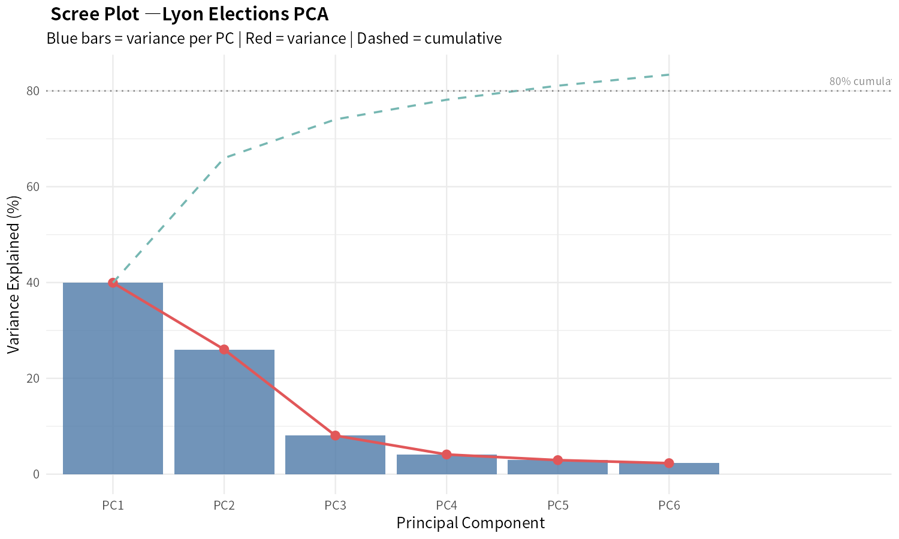
The combined scree plot, computed on a merged matrix of all nine elections, shows how variance is distributed across principal components. The first few components capture the dominant sources of political variation in Lyon; the remaining components correspond to more residual patterns. The cumulative variance curve indicates how many components are required to account for a given proportion of total variation. This overview provides a reference baseline for the election-level analyses that follow.
2.1.2 — PC1+PC2 Variance Explained per Election
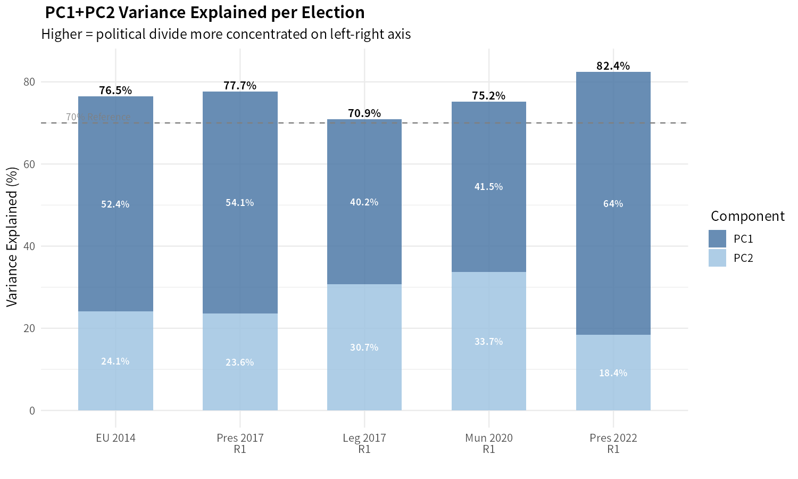
This chart compares the combined variance explained by the first two principal components across five elections (European 2014, Presidential 2017 R1, Legislative 2017 R1, Municipal 2020 R1, and Presidential 2022 R1). Elections where this two-component total is higher suggest that political variation among polling stations is more concentrated along two dominant axes — which may indicate a more clearly structured electoral geography. Conversely, elections where this total is lower may reflect a more fragmented political landscape in which no single axis captures the bulk of the variation.
These differences across election types may reflect structural factors such as the number of competing lists, the presence or absence of runoff incentives, and the broader national political context at the time. However, caution is warranted in interpreting them causally, given that the number of blocs is held constant across elections by construction, which may itself affect the proportion of variance captured by the first two components.
2.1.3 — Correlation Circles
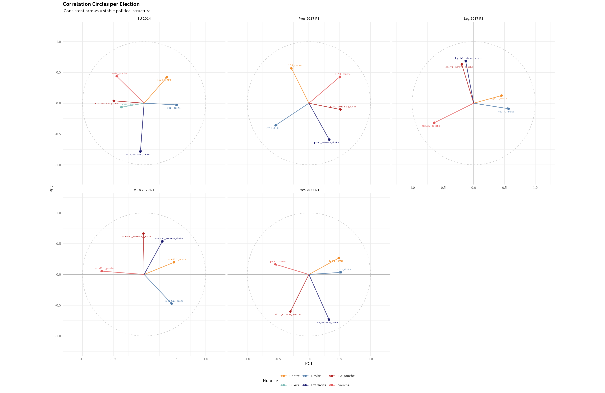
The panel of correlation circles — one per election — displays the loadings of each political bloc on the first two principal components. The length of each arrow reflects how strongly that bloc contributes to the two-dimensional representation: a longer arrow indicates that the bloc’s vote share is well explained by these two components. The angle between two arrows reflects their correlation on this plane: near-parallel arrows suggest positively correlated blocs; roughly orthogonal arrows suggest near-independence; opposing arrows suggest negative correlation.
Across elections, the opposition between gauche and droite tends to be relatively stable, with arrows pointing in broadly consistent opposite directions. The positions of centre and extreme_droite appear more variable. In some elections, centre aligns more closely with droite; in others it occupies a more autonomous position. This variability is consistent with the changing political character of the centrist camp from 2017 onwards, notably the emergence of Macron’s movement — and warrants interpretive prudence when comparing elections across years.
It should also be noted that the divers category, which aggregates candidates not mapped to any of the five main blocs, may introduce some noise into theloading structure and should be treated as a residual category rather than a coherent political signal.
2.1.4 — Biplots
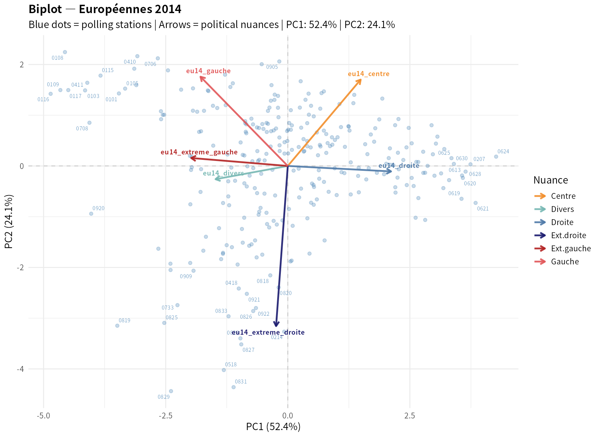
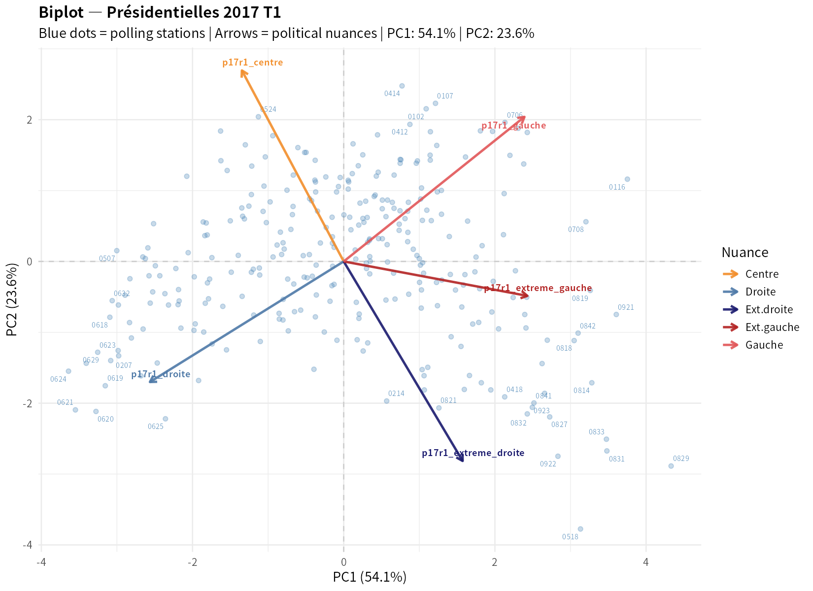
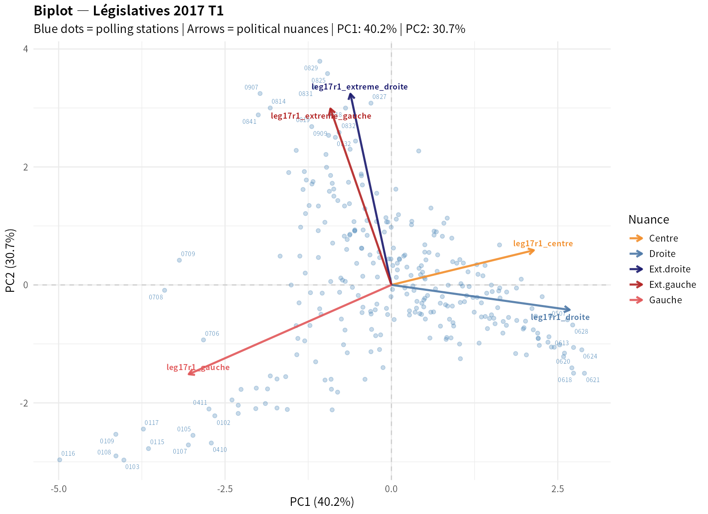
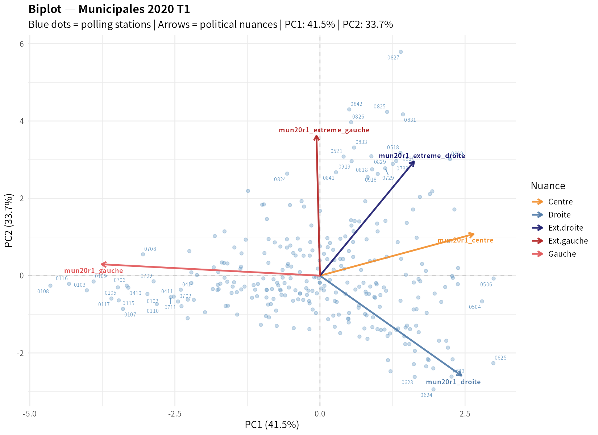
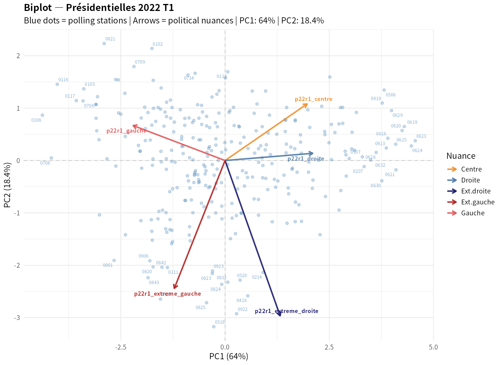
In each biplot, blue dots represent individual polling stations projected onto the first two principal components; coloured arrows represent the political blocs. Stations located far from the origin along an arrow’s direction tend to have a comparatively high vote share for that bloc. The distribution of stations in biplot space thus reveals whether Lyon’s neighbourhoods cluster politically, and whether this spatial structure changes across elections.
Several observations can be drawn from this series. First, the overall spread of polling stations varies between elections: a more dispersed cloud suggests greater neighbourhood-level heterogeneity, while a more concentrated cloud suggests greater homogeneity. Second, the relative positions of the bloc arrows change across elections, reflecting broader national political dynamics: the fragmentation of the right in 2017, the progressive consolidation of left-wing votes in certain years, and the repositioning of the centrist bloc from 2017 onwards. These observations are descriptive features of the data and should not be read as causal statements about voter behaviour.
2.2 — CCA: Canonical Correlation Analysis
CCA was used to measure the extent to which the voting geographies of two elections are linearly related, after removing the linear constraint that vote shares sum to 1 (by dropping the last column of each share matrix). The first canonical correlation r₁ represents the maximum linear association between a weighted combination of blocs in one election and a weighted combination in the other: values close to 1 suggest strong geographic stability; values further from 1 suggest more substantial restructuring between the two elections.
Five comparisons were selected:
- Municipal 2020 R1 vs. R2 : within-election round consistency
- Presidential 2017 R1 vs. Presidential 2022 R1 : stability across two presidential elections
- Presidential 2017 R1 vs. Legislative 2017 R1 : stability across election types within the same year
- European 2014 vs. Presidential 2017 R1 : cross-year, cross-type comparison
- European 2014 vs. Municipal 2020 R1 : a longer temporal horizon comparing two list-based elections
The CCA summary table records r₁ and the number of common polling stations for each comparison. The correlation circle plots display, for each election in a pair, the correlations of each political bloc’s vote share with the first two canonical dimensions — analogous to loadings in a PCA biplot, but reflecting the shared structure between two election matrices rather than the internal structure of a single one.
2.2.1 — Municipal 2020: Round 1 vs. Round 2
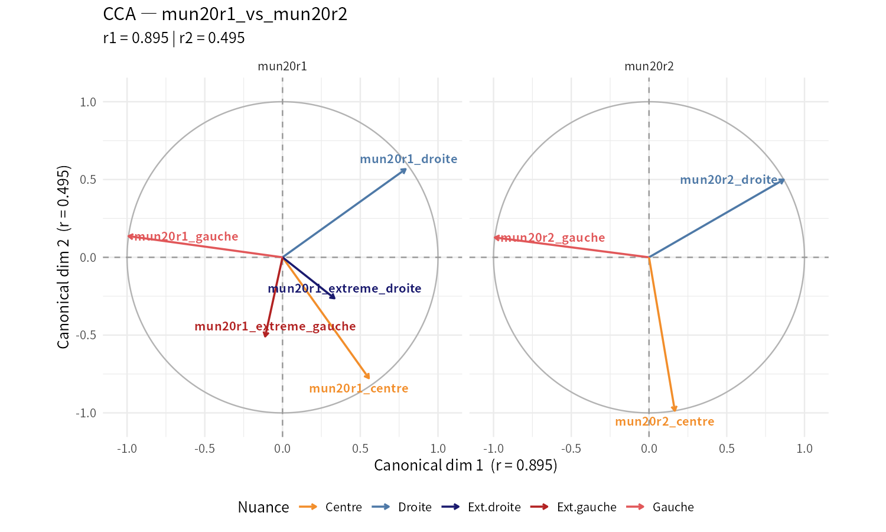
Comparing the two rounds of the same election provides a natural baseline for what a high canonical correlation looks like in this dataset. The two rounds share the same candidates and the same institutional context; the main difference is the shift from a multi-list first round to a more concentrated runoff. To the extent that the geographic distribution of political preferences is stable between rounds, the bloc arrows should maintain their directions and relative positions across the two panels of this plot. Any divergence is likely attributable to differential abstention and tactical voting between rounds, rather than a genuine change in underlying political preferences.
2.2.2 — Presidential 2017 R1 vs. Presidential 2022 R1
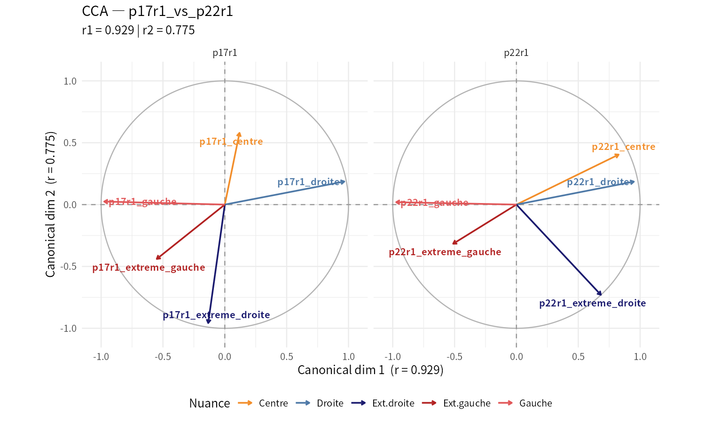
Comparing the first rounds of two presidential elections five years apart tests the medium-term stability of Lyon’s political geography. The candidate landscape changed substantially between the two cycles: the entry of Zemmour as a second far-right candidate in 2022, alongside Le Pen, and the consolidation of the left around Mélenchon, both had the potential to redistribute the geographic pattern of bloc voting. The extent to which the canonical loadings for centre, droite, and extreme_droite shift between the two panels reflects these structural changes. As noted above, the droite category became comparatively weaker in 2022, given the fragmentation of the traditional right vote.
2.2.3 — Presidential 2017 R1 vs. Legislative 2017 R1
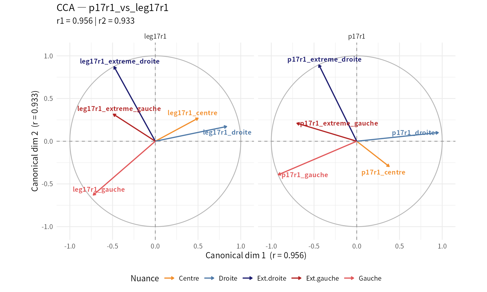
This comparison tests the stability of voting geography within the same year but across two election types held under different institutional rules. The presidential election is a two-round majority contest for a single national office, which historically encourages tactical voting in round 1; the legislative election is a two-round majority contest in single-member constituencies, where local factors and candidate alliances may play a larger role. The extent to which the geographic profiles of the five blocs are preserved across these two elections reflects how strongly neighbourhood-level preferences are anchored to political tendencies that transcend the specific institutional format.
2.2.4 — European 2014 vs. Presidential 2017 R1
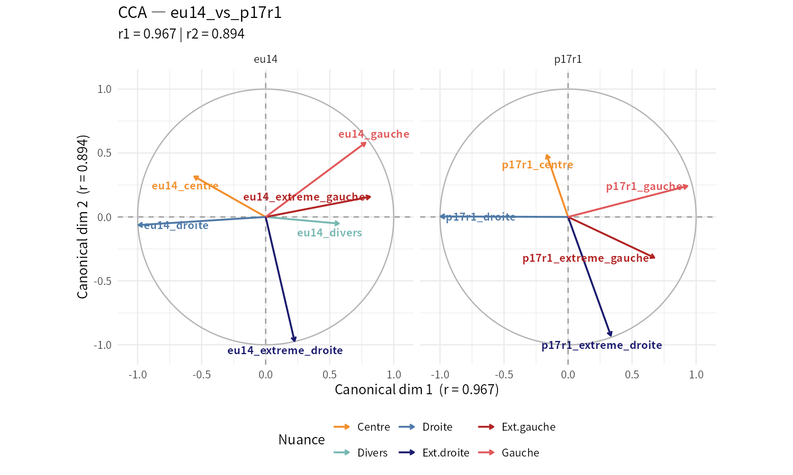
This comparison introduces a three-year gap and a contrast between a proportional list election (European 2014) and a majoritarian candidate election (Presidential 2017 R1). List-based proportional elections tend to produce higher abstention and attract a more ideologically consistent electorate, while presidential elections mobilise a broader and more heterogeneous one. These structural differences may affect the geographic stability of bloc shares independently of any genuine shifts in political preferences across neighbourhoods, which limits how much of the observed canonical structure can be attributed to temporal change alone.
2.2.5 — European 2014 vs. Municipal 2020 R1
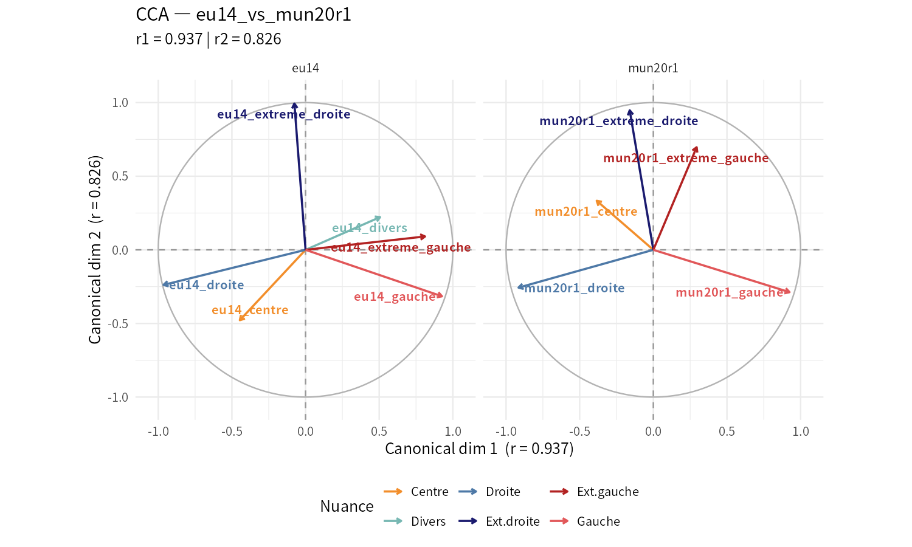
This comparison spans the widest temporal gap while comparing two elections that share a broadly similar format — both are list-based, both tend toward higher abstention, and both reduce the incentive for purely tactical voting. The degree of geographic stability observed here, relative to the cross-type comparisons above, may shed some light on the respective contributions of election format and temporal change as drivers of geographic restructuring. That said, the six-year interval also encompasses substantial changes in the national political landscape, which makes it difficult to isolate the effect of election format from that of genuine political shifts.
2.2.6 — CCA Summary
# A tibble: 5 × 3
comparison r1 n_stations
<chr> <dbl> <int>
1 mun20 R1 vs R2 0.895 294
2 pres 2017 vs 2022 0.929 293
3 pres 2017 vs leg 2017 0.956 294
4 eu14 vs pres 2017 0.967 285
5 eu14 vs mun20 0.937 285The summary table collects the first canonical correlations for all five comparisons. These values should be interpreted comparatively rather than in absolute terms: what matters is the relative ordering and the degree to which within-election or within-year comparisons yield higher correlations than across-year or across-type ones. Any such ordering would suggest that election format and temporal distance both contribute to geographic restructuring, though causal inferences from this cross sectional comparison would require additional evidence.
2.3 — Clustering
The objective of the clustering analysis is to group Lyon’s polling stations into a small number of politically coherent profiles, to characterise the spatial structure of voting behaviour, and to provide a discrete categorical variable for the regression analysis in Section 2.4.
The clustering was performed on a combined feature matrix pooling the vote shares from three elections: Presidential 2017 R1, Municipal 2020 R1, and Presidential 2022 R1. These three elections were selected as the most informative and the most temporally proximate to the 2024 legislative elections used as the regression outcome. The combined matrix thus describes each polling station in terms of its political trajectory across roughly five years.
Two families of methods were applied: k-means clustering and hierarchical clustering. For k-means, the optimal number of clusters was selected via silhouette analysis. For hierarchical clustering, four combinations of distance metric and linkage method were tested, and all solutions were compared using the Adjusted Rand Index (ARI).
2.3.1 — Silhouette Analysis and Choice of k
Clustering matrix: 293 stations x 15 variablesOptimal k by silhouette: 2 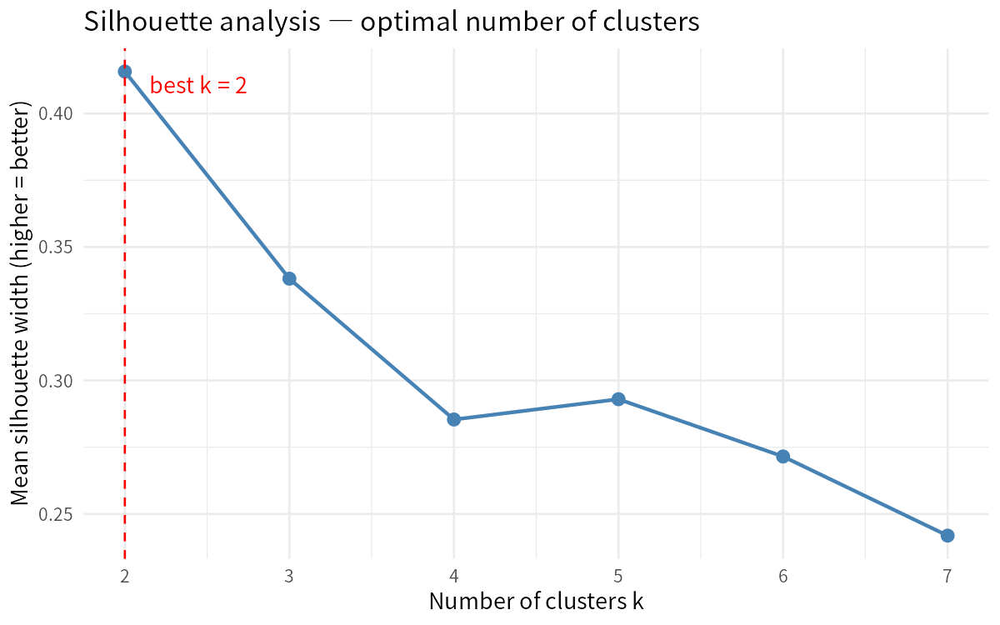
The silhouette plot displays the mean silhouette width for k ranging from 2 to 7. The mean silhouette width measures, on average, how much more similar each station is to its own cluster than to the nearest alternative cluster: higher values indicate more compact and well-separated clusters. The value of k yielding the highest mean silhouette width was selected as the reference solution.
It should be noted that silhouette analysis identifies the most internally coherent partition given the data and the Euclidean distance metric; other criteria might point to a different choice. The selected k is therefore used as a working hypothesis rather than a definitive answer, and the sensitivity of subsequent results to this choice is worth bearing in mind.
2.3.2 — K-means Clusters on the PCA Plane
ARI: single init 1 vs best (nstart=25): 1 ARI: single init 2 vs best (nstart=25): 1 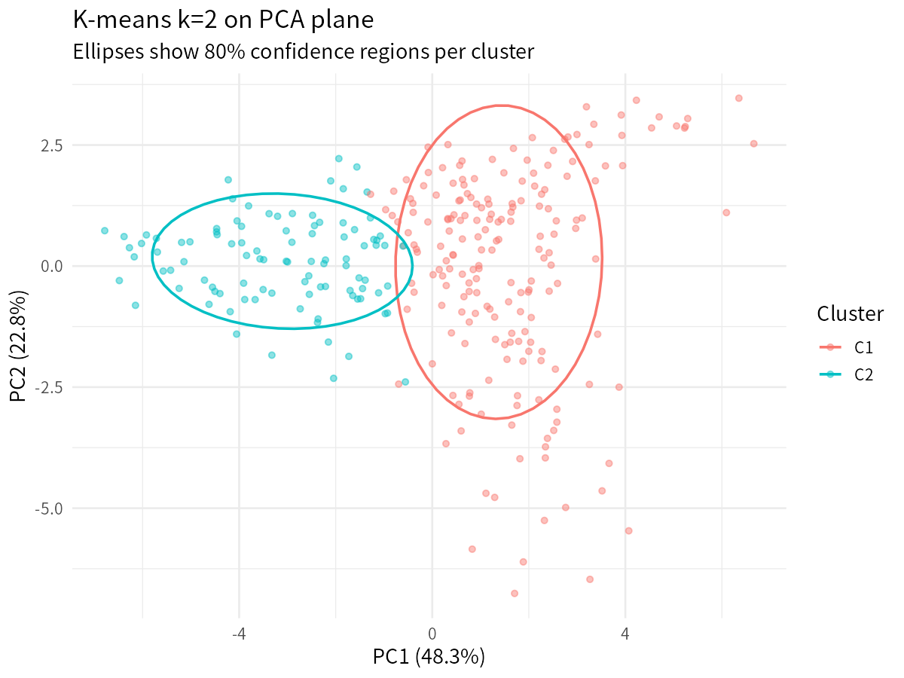
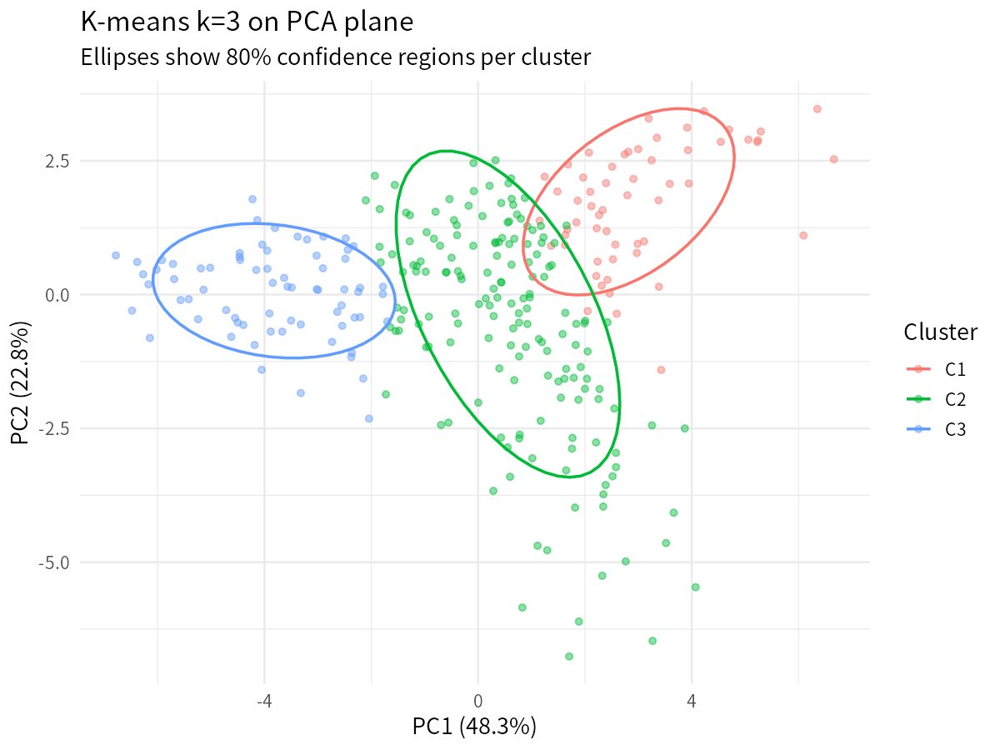
The k-means solutions for k = 2 and k = 3 are projected onto the first two principal components of the clustering matrix, alongside 80% confidence ellipses for each cluster. These visualisations complement the silhouette analysis by showing whether the clusters occupy distinct regions of the PCA space. The two-cluster solution provides a natural reference: it tends to separate broadly left-leaning stations from broadly right-leaning ones. Whether finer-grained partitions add substantive interpretive value, beyond splitting the two coarse groups, can be assessed by inspecting the ellipses for cluster overlap.
2.3.3 — Cluster Political Profiles
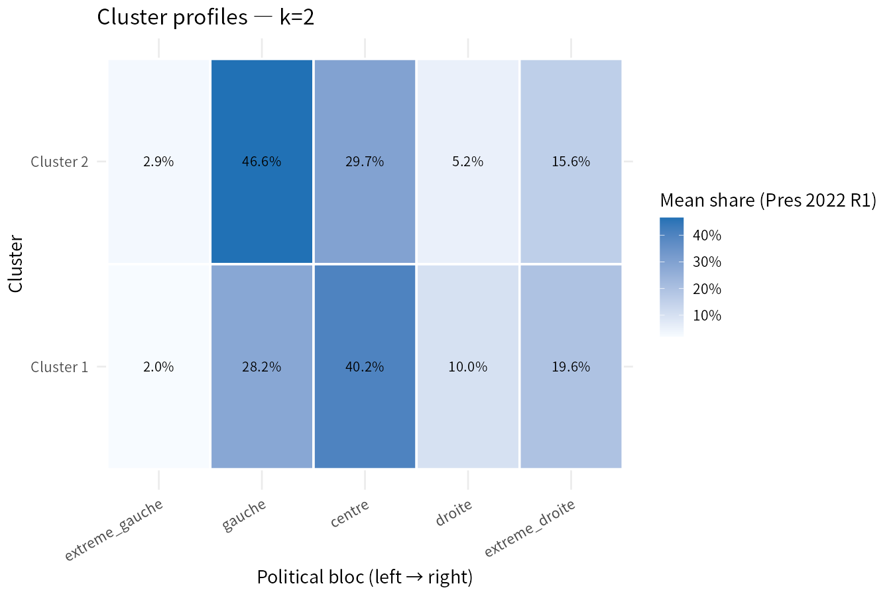
The heatmap displays the mean vote share per political bloc and per cluster, computed from the Presidential 2022 R1 data. This election was selected for the profile characterisation because it is the most recent in the clustering matrix and provides five well-distributed bloc categories. Each cluster’s profile can be read as a stylised description of the type of neighbourhood it captures. These profiles should be interpreted as averages: within-cluster variation is not displayed and may be substantial in some cases.
2.3.4 — Hierarchical Clustering: Dendrograms
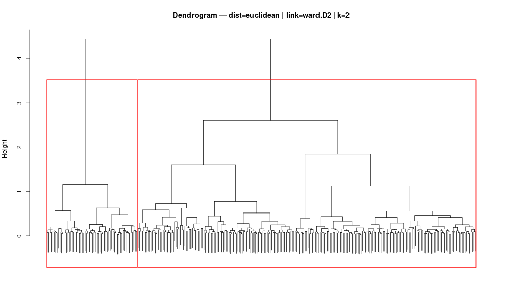
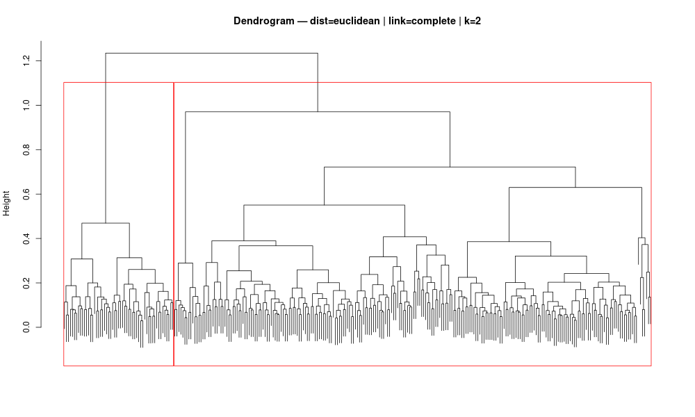
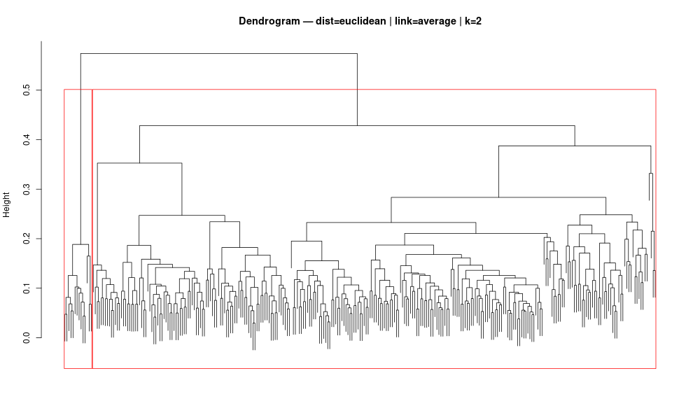
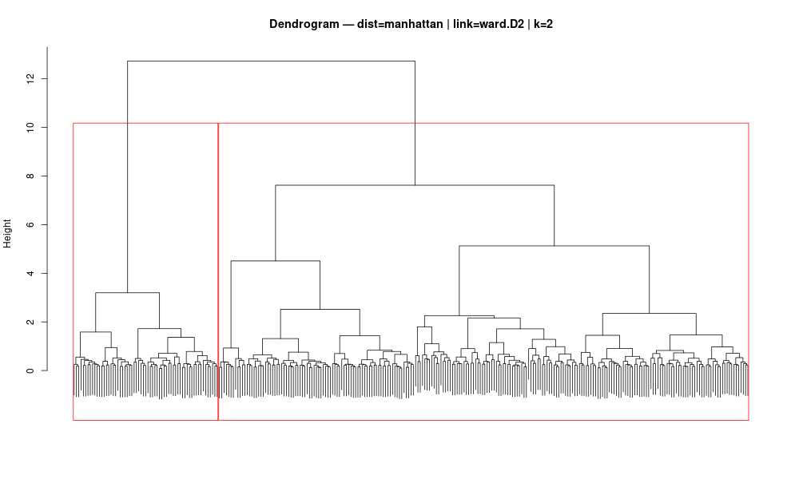
Four hierarchical clustering solutions were computed: Euclidean distance with Ward, complete, and average linkage, and Manhattan distance with Ward linkage. The dendrograms illustrate the hierarchical merging process; the red lines mark the partition at k clusters. Ward linkage with Euclidean distance tends to produce more compact and roughly equal-sized clusters; complete linkage produces more balanced but sometimes looser clusters; average linkage is sensitive to chaining effects in elongated data structures; Manhattan distance provides a degree of robustness to outliers in high-dimensional spaces. Comparing the four dendrograms visually gives a first impression of whether the broad structure of the partition is robust to specification choices.
2.3.5 — ARI Comparison Across Methods
# A tibble: 7 × 3
comparison ARI interpretation
<chr> <dbl> <chr>
1 kmeans vs hclust ward 0.552 Moderate
2 kmeans vs hclust complete 0.476 Moderate
3 kmeans vs hclust average -0.038 Weak
4 kmeans vs hclust manhattan+ward 0.563 Moderate
5 hclust ward vs complete 0.805 Very similar
6 hclust ward vs average -0.056 Weak
7 hclust ward vs manhattan+ward 0.985 Very similar The ARI table summarises the pairwise agreement between all clustering methods. An ARI close to 1 indicates near-identical partitions; an ARI near 0 indicates agreement no better than chance. High agreement between k-means and several hierarchical solutions would provide reassurance that the identified clusters are not artefacts of a particular algorithm. Conversely, low agreement, particularly for average linkage — would suggest that the partition is sensitive to algorithmic choices, and that substantive interpretations should be made with appropriate caution.
2.4 — Regression: Predicting the 2024 Legislative Elections
The regression analysis uses the political geography characterised in the preceding sections to predict the first-round results of the 2024 legislative elections in Lyon’s polling stations. This constitutes the main predictive objective of the project.
2.4.1 — Data preparation
Two additional datasets were acquired for this section: the European 2024 results and the Legislative 2024 R1 results, both filtered to Lyon (commune code 69123) from CSV files published by the French Ministry of the Interior. The nuance codes in these datasets follow the official classification system used in the earlier elections and were mapped to the same five-bloc scheme. The European 2024 results serve as an additional explanatory variable; the Legislative 2024 R1 results are the response variable.
The regression dataset was constructed by joining all wide share tables on polling station identifier (bureau). The cluster label from the k-means solution (Section 2.3) was also joined as a categorical explanatory variable, providing a discrete summary of each station’s historical political profile. After removing stations with missing values across any election, the resulting dataset contains only stations present in all nine historical elections plus the two 2024 datasets.
2.4.2 — Model specification
One linear regression model was estimated per political bloc:
\[\hat{y}_{\text{leg2024},b} = \beta_0 + \beta_1 x_{\text{eu14},b} + \beta_2 x_{\text{p17r1},b} + \beta_3 x_{\text{leg17r1},b} + \beta_4 x_{\text{mun20r1},b} + \beta_5 x_{\text{p22r1},b} + \beta_6 x_{\text{euro2024},b} + \gamma_k + \varepsilon\]
where \(b\) denotes the political bloc, \(x_{e,b}\) is the vote share for bloc \(b\) in election \(e\), and \(\gamma_k\) is a fixed effect for the cluster \(k\) to which the station belongs. The cluster fixed effect captures systematic differences in baseline vote levels across neighbourhood types that are not explained by the bloc-specific temporal predictors alone.
It should be noted that this specification treats each bloc independently: vote shares across blocs within a station are not constrained to sum to 1 in the regression. This simplification allows each model to be estimated and interpreted separately, but may introduce some inconsistency if predictions are aggregated.
Euro 2024 Lyon bureaux: 306 Leg 2024 R1 Lyon bureaux: 306 Euro 2024 nuances: [1] "LCOM" "LDIV" "LDVD" "LDVG" "LECO" "LENS" "LEXD" "LEXG" "LFI" "LLR"
[11] "LREC" "LRN" "LUG" "LVEC"Leg 2024 R1 nuances: [1] "" "DIV" "ECO" "ENS" "EXG" "LR" "REC" "RN" "UDI" "UG" Euro 2024 bureaux: 306 Leg 2024 R1 bureaux: 305 Regression dataset: 283 polling stationsVariables: 40 2.4.3 — R² per bloc
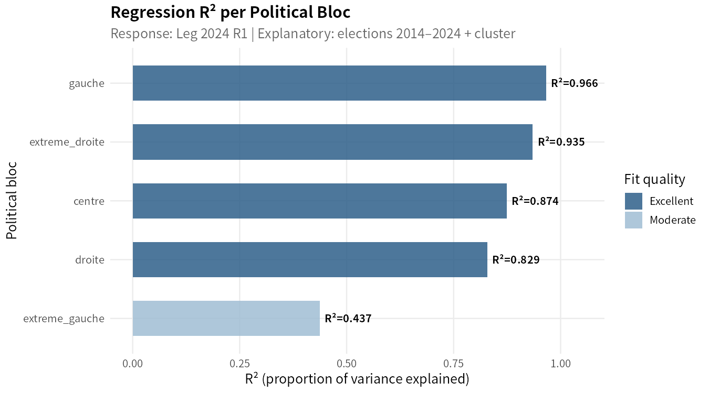
The bar chart displays the R² for each of the five bloc-specific models. In general, blocs whose vote share is geographically stable across elections, meaning that the same areas tend to vote consistently for the same bloc which are expected to yield higher R² values. Blocs that experienced more substantial geographic restructuring between 2022 and 2024 are expected to yield lower values.
These figures should be interpreted cautiously. A high R² indicates good in-sample fit but does not guarantee out-of-sample accuracy; the ratio of predictors to observations means that some degree of over-fitting is plausible, and adjusted R² values — also reported — provide a partial correction.
2.4.4 — Coefficient plots
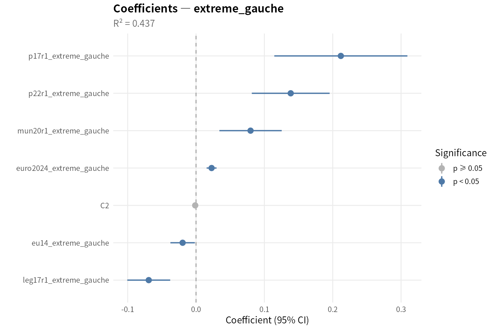
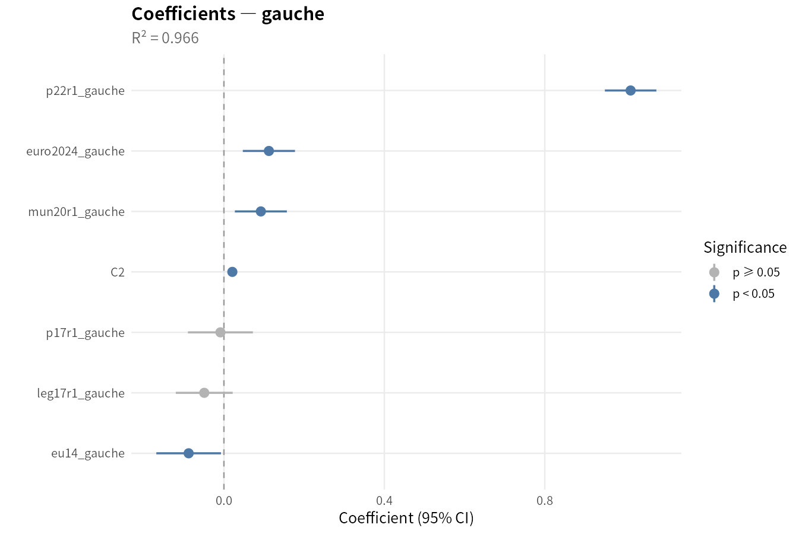
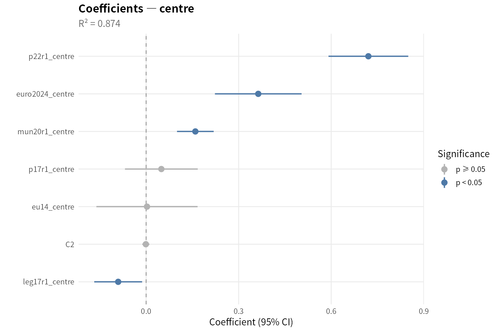
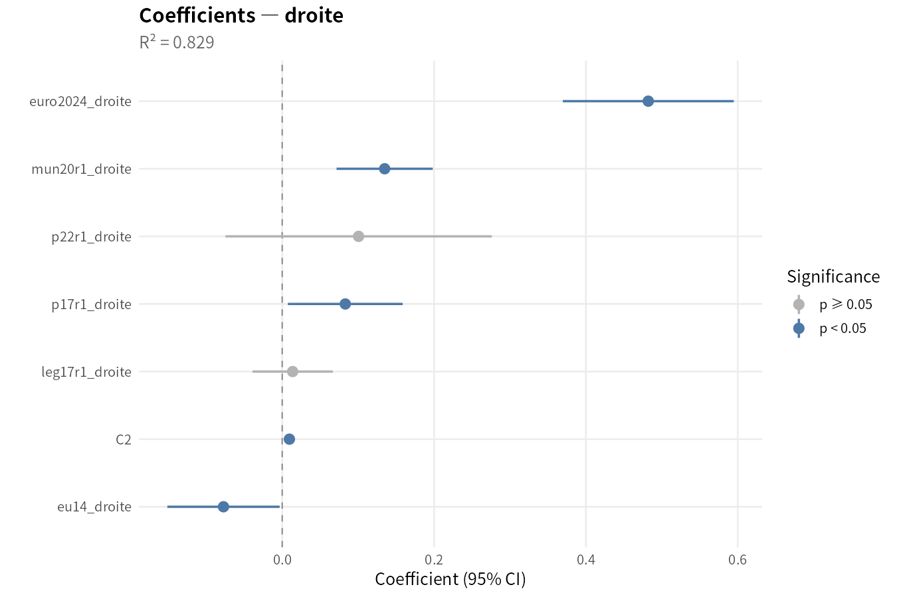
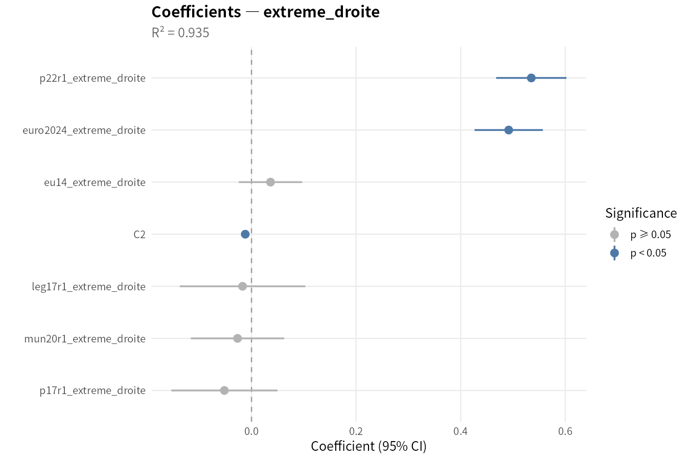
For each bloc, the coefficient plot shows the estimated regression coefficients and their 95% confidence intervals, with statistically significant coefficients (p < 0.05) highlighted in blue. The most recent elections, particularly Presidential 2022 R1 and European 2024 may carry the largest predictive weight for the 2024 legislative results, given their temporal proximity. Earlier elections may have coefficients that are not statistically distinguishable from zero, reflecting the possibility that the geographic structure of political support can shift substantially over the study period.
Cluster fixed effects, when statistically significant, indicate that stations in a given cluster tend to have systematically higher or lower vote shares for a bloc, after controlling for their historical voting trajectories. These effects may capture neighbourhood-level characteristics not fully explained by the bloc-share predictors alone.
2.4.5 — Summary table and limitations
# A tibble: 5 × 5
bloc r2 adj_r2 p_value fit_quality
<chr> <dbl> <dbl> <dbl> <chr>
1 extreme_gauche 0.437 0.423 0 Moderate
2 gauche 0.966 0.965 0 Excellent
3 centre 0.874 0.871 0 Excellent
4 droite 0.829 0.825 0 Excellent
5 extreme_droite 0.935 0.933 0 Excellent The regression analysis provides a data-driven characterisation of the geographic predictability of Lyon’s 2024 legislative results. Several limitations should be borne in mind. First, the five-bloc classification scheme aggregates candidates with heterogeneous profiles and may obscure important within-bloc variation, particularly for blocs that fielded coalition lists in 2024. Second, the model does not account for changes in which candidates stood in each polling station’s legislative constituency between elections, which can affect bloc shares independently of any genuine shift in voter preferences. Third, only polling-station-level electoral data are used; the inclusion of sociodemographic variables would likely enrich the predictive model. Finally, the results are specific to the city of Lyon and should not be generalised to other French cities without further investigation.
Appendix : full code
knitr::opts_chunk$set(echo = FALSE, message = FALSE, warning = FALSE, cache = TRUE)
auto_pkgs <- c(
"stringi", "dplyr", "stringr", "arrow", "tidyr", "ggplot2",
"ggrepel", "corrplot", "tibble", "CCA", "viridis", "mclust",
"cluster", "broom", "scales"
)
install.packages(setdiff(auto_pkgs, installed.packages()[, "Package"]))
invisible(lapply(auto_pkgs, library, character.only = TRUE))
# source("R/01_download.R")
# source("R/02_clean_data.R")
# source("R/03_make_wide.R")
if (!dir.exists("data_raw")) dir.create("data_raw")
download_if_not_local <- function(url, dest) {
dest_path <- file.path("data_raw", dest)
if (!file.exists(dest_path)) {
message("Downloading ", dest)
download.file(url, dest_path, mode = "wb")
} else {
message(dest, " already exists, skipping.")
}
}
files <- list(
# Parlement européen, 2014
list(
url = "https://hub.huwise.com/api/explore/v2.1/catalog/datasets/resultats-des-elections-europeennes-2014/exports/parquet/?lang=en&offset=0&where=nom_de_la_commune%3D%22Lyon%22",
dest = "lyon_europe2014.parquet"
),
# Présidentielles, 2017, 1st round
list(
url = "https://hub.huwise.com/api/explore/v2.1/catalog/datasets/election-presidentielle-2017-resultats-par-bureaux-de-vote-tour-1/exports/parquet/?lang=en&offset=0&where=libelle_de_la_commune%3D%22Lyon%22",
dest = "lyon_pres2017_r1.parquet"
),
# Présidentielles, 2017, 2nd round
list(
url = "https://hub.huwise.com/api/explore/v2.1/catalog/datasets/election-presidentielle-2017-resultats-par-bureaux-de-vote-tour-2/exports/parquet/?lang=en&offset=0&where=libelle_de_la_commune%3D%22Lyon%22",
dest = "lyon_pres2017_r2.parquet"
),
# Législatives, 2017, 1st
list(
url = "https://hub.huwise.com/api/explore/v2.1/catalog/datasets/elections-legislatives-2017-resultats-par-bureaux-de-vote-tour-1/exports/parquet/?lang=en&offset=0&where=libelle_de_la_commune%3D%22Lyon%22",
dest = "lyon_leg2017_r1.parquet"
),
# Législatives, 2017, 2nd
list(
url = "https://hub.huwise.com/api/explore/v2.1/catalog/datasets/elections-legislatives-2017-resultats-par-bureaux-de-vote-tour-2/exports/parquet/?lang=en&offset=0&where=libelle_de_la_commune%3D%22Lyon%22",
dest = "lyon_leg2017_r2.parquet"
),
# Municipales, 2020, 1st
list(
url = "https://hub.huwise.com/api/explore/v2.1/catalog/datasets/election-france-municipale-2020-premier-tour/exports/parquet/?lang=en&offset=0&where=com_name%3D%22Lyon%22",
dest = "lyon_mun2020_r1.parquet"
),
# Municipales, 2020, 2nd
list(
url = "https://hub.huwise.com/api/explore/v2.1/catalog/datasets/election-france-municipale-2020-deuxieme-tour/exports/parquet/?lang=en&offset=0&where=com_name%3D%22Lyon%22",
dest = "lyon_mun2020_r2.parquet"
),
# Présidentielles, 2022, 1st
list(
url = "https://hub.huwise.com/api/explore/v2.1/catalog/datasets/elections-france-presidentielles-2022-1er-tour-par-bureau-de-vote/exports/parquet/?lang=en&offset=0&where=com_name%3D%22Lyon%22",
dest = "lyon_pres2022_r1.parquet"
),
# Présidentielles, 2022, 2nd
list(
url = "https://hub.huwise.com/api/explore/v2.1/catalog/datasets/elections-france-presidentielles-2022-2nd-tour-par-bureau-de-vote/exports/parquet/?lang=en&offset=0&where=com_name%3D%22Lyon%22",
dest = "lyon_pres2022_r2.parquet"
)
)
# download
for (f in files) {
download_if_not_local(f$url, f$dest)
}
message("All files have been downloaded.")
# ===================
# data loading
# ===================
europe2014 = arrow::read_parquet("data_raw/lyon_europe2014.parquet")
pres2017_r1 = arrow::read_parquet("data_raw/lyon_pres2017_r1.parquet")
pres2017_r2 = arrow::read_parquet("data_raw/lyon_pres2017_r2.parquet")
leg2017_r1 = arrow::read_parquet("data_raw/lyon_leg2017_r1.parquet")
leg2017_r2 = arrow::read_parquet("data_raw/lyon_leg2017_r2.parquet")
mun2020_r1 = arrow::read_parquet("data_raw/lyon_mun2020_r1.parquet")
mun2020_r2 = arrow::read_parquet("data_raw/lyon_mun2020_r2.parquet")
pres2022_r1 = arrow::read_parquet("data_raw/lyon_pres2022_r1.parquet")
pres2022_r2 = arrow::read_parquet("data_raw/lyon_pres2022_r2.parquet")
# ===================
# clean_data
# ===================
# Parlement européen, 2014
# https://fr.wikipedia.org/wiki/%C3%89lections_europ%C3%A9ennes_de_2014_en_France#Sud-Est_2
partis = europe2014 |> dplyr::group_by(code_nuance_du_candidat) |> dplyr::summarise(votes=sum(nombre_de_voix_du_candidat))
partis
candidats = europe2014 |> dplyr::group_by(candidat, code_nuance_du_candidat) |> dplyr::summarise(votes=sum(nombre_de_voix_du_candidat)) |> dplyr::arrange(desc(votes))
candidats
replace_nuance <- function(df, nuances_mapping) {
for (nuance_i in seq_along(nuances_mapping)) {
for (liste_noms in nuances_mapping[nuance_i]) {
for (nom in liste_noms) {
df[df==nom] <- names(nuances_mapping)[nuance_i]
}
}
}
df
}
nuances_mapping <- list(
extreme_gauche = list("LEXG", "LFG"),
gauche = list("LDVG", "LUG", "LVEC"),
centre = list("LUC"),
droite = list("LDVD", "LUMP"),
extreme_droite = list("LFN"),
divers = list("LDIV")
)
europe2014_clean <- europe2014 |> dplyr::select(no_de_bureau_de_vote, code_nuance_du_candidat, nombre_de_voix_du_candidat) |> dplyr::mutate(bureau=no_de_bureau_de_vote, nuance=code_nuance_du_candidat, votes=nombre_de_voix_du_candidat) |> dplyr::select(bureau, nuance, votes)
europe2014_clean <- replace_nuance(europe2014_clean, nuances_mapping)
#Présidentielles 2017
pres2017_r1 |> dplyr::select(nom, voix) |> dplyr::mutate(nom=tolower(nom)) |> dplyr::mutate(nom=stringi::stri_trans_general(nom, id="Latin-ASCII")) |> dplyr::group_by(nom) |> dplyr::summarize(votes=sum(voix))
#https://fr.wikipedia.org/wiki/%C3%89lection_pr%C3%A9sidentielle_fran%C3%A7aise_de_2017#Candidats
nuances_mapping <- list(
extreme_gauche = list("arthaud", "poutou"),
gauche = list("hamon", "melenchon"),
centre = list("lassalle", "macron"),
droite = list("asselineau", "dupont-aignan", "fillon"),
extreme_droite = list("le pen", "cheminade")
)
#Présidentielles 2017 round 1
pres2017_r1_clean <- pres2017_r1 |> dplyr::mutate(nuance=tolower(nom)) |> dplyr::select(code_du_b_vote, nuance, voix) |> dplyr::mutate(nuance=stringi::stri_trans_general(nuance, id="Latin-ASCII")) |> replace_nuance(nuances_mapping) |> dplyr::select(bureau = code_du_b_vote, nuance, votes = voix)
#Présidentielles 2017 round 2
pres2017_r2_clean <- pres2017_r2 |> dplyr::mutate(nuance=tolower(nom)) |> dplyr::select(code_du_b_vote, nuance, voix) |> dplyr::mutate(nuance=stringi::stri_trans_general(nuance, id="Latin-ASCII")) |> replace_nuance(nuances_mapping) |> dplyr::select(bureau = code_du_b_vote, nuance, votes = voix)
#Législatives 2017
#round1
leg2017_r1 |> dplyr::select(nuance, voix) |> dplyr::mutate(nuance) |> dplyr::group_by(nuance) |> dplyr::summarize(votes=sum(voix))
nuances_mapping <- list(
extreme_gauche = list("COM", "EXG"),
gauche = list("FI", "DVG", "ECO"),
centre = list("DIV", "REG", "REM", "UDI"),
droite = list("DLF", "DVD", "LR"),
extreme_droite = list("EXD", "FN")
)
leg2017_r1_clean <- leg2017_r1 |> dplyr::select(code_du_b_vote, nuance, voix) |> dplyr::mutate(bureau=code_du_b_vote, votes=voix) |> replace_nuance(nuances_mapping)|> dplyr::select(bureau, nuance, votes)
#round2
leg2017_r2_clean <- leg2017_r2 |> dplyr::select(code_du_b_vote, nuance, voix) |> dplyr::mutate(bureau=code_du_b_vote, votes=voix) |> replace_nuance(nuances_mapping) |> dplyr::select(bureau, nuance, votes)
#municipales 2020
mun2020_r1 |> dplyr::group_by(list) |> dplyr::summarise(votes=sum(vote))
# Function to cleanup party names (lowercase, no accents, and cut to 20 characters)
get_votes_by_cleaned_list <- function(df)
{
df |> dplyr::mutate(liste=tolower(list)) |> dplyr::mutate(liste=stringr::str_trunc(liste, 20)) |> dplyr::mutate(liste=stringi::stri_trans_general(liste, id="Latin-ASCII")) |> dplyr::group_by(liste) |> dplyr::summarise(votes=sum(vote))
}
listes_mun2020_r1 = get_votes_by_cleaned_list(mun2020_r1)
listes_mun2020_r1
listes_mun2020_r2 = get_votes_by_cleaned_list(mun2020_r2)
listes_mun2020_r2
nuances_mapping <- list(
extreme_gauche = list("lutte ouvriere - ...", "EXG"),
gauche = list("droit de cite", "lyon 100% social", "lyon en commun", "maintenant lyon p...", "vivons vraiment l...", "ensemble, l'ecolo..."),
centre = list("positivons lyon a...", "positivons lyon-1...", "respirations avec...", "un temps d'avance..."),
droite = list("bleu blanc lyon e...", "vos idees en lumiere", "lyon, la force du..."),
extreme_droite = list("pour l'amour de lyon")
)
# two round data of Municipales 2020
mun2020_clean_r1 = mun2020_r1 |> dplyr::mutate(nuance=tolower(list)) |> dplyr::mutate(nuance=stringr::str_trunc(nuance, 20)) |> dplyr::mutate(nuance=stringi::stri_trans_general(nuance, id="Latin-ASCII")) |> dplyr::select(office, nuance, vote) |> dplyr::mutate(bureau=office, nuance=nuance, votes=vote) |> replace_nuance(nuances_mapping) |> dplyr::select(bureau = office, nuance, votes = vote)
mun2020_clean_r2 = mun2020_r2 |> dplyr::mutate(nuance=tolower(list)) |> dplyr::mutate(nuance=stringr::str_trunc(nuance, 20)) |> dplyr::mutate(nuance=stringi::stri_trans_general(nuance, id="Latin-ASCII")) |> dplyr::select(office, nuance, vote) |> dplyr::mutate(bureau=office, nuance=nuance, votes=vote) |> replace_nuance(nuances_mapping)|> dplyr::select(bureau = office, nuance, votes = vote)
# https://fr.wikipedia.org/wiki/%C3%89lections_municipales_de_2020_%C3%A0_Lyon#R%C3%A9sultats_g%C3%A9n%C3%A9raux)
#Présidentielles 2022
pres2022_r1 |> dplyr::group_by(nom) |> dplyr::summarise(votes=sum(voix))
nuances_mapping <- list(
extreme_gauche = list("ARTHAUD", "POUTOU", "ROUSSEL"),
gauche = list("MÉLENCHON", "JADOT", "HIDALGO"),
centre = list("LASSALLE", "MACRON"),
droite = list("DUPONT-AIGNAN", "PÉCRESSE"),
extreme_droite = list("LE PEN", "ZEMMOUR")
)
pres2022_r1_clean <- pres2022_r1 |> dplyr::select(code_du_b_vote, nom, voix) |> dplyr::mutate(bureau=code_du_b_vote, nuance=nom, votes=voix) |> replace_nuance(nuances_mapping)|> dplyr::select(bureau = code_du_b_vote, nuance, votes = voix) |>
dplyr::mutate(bureau = stringr::str_pad(
as.character(bureau), width = 4, side = "left", pad = "0"))
pres2022_r2_clean <- pres2022_r2 |> dplyr::select(code_du_b_vote, nom, voix) |> dplyr::mutate(bureau=code_du_b_vote, nuance=nom, votes=voix) |> replace_nuance(nuances_mapping)|> dplyr::select(bureau = code_du_b_vote, nuance, votes = voix) |>
dplyr::mutate(bureau = stringr::str_pad(
as.character(bureau), width = 4, side = "left", pad = "0"))
#-------------------------------
# Helper function: long table into wide table (proportions)
#
make_wide <- function(df, label) {
df |>
dplyr::group_by(bureau, nuance) |>
dplyr::summarise(votes = sum(votes, na.rm = TRUE), .groups = "drop") |>
dplyr::group_by(bureau) |>
dplyr::mutate(pct = votes / sum(votes)) |>
dplyr::ungroup() |>
dplyr::select(bureau, nuance, pct) |>
tidyr::pivot_wider(names_from = nuance, values_from = pct, values_fill = 0) |>
dplyr::rename_with(~ paste0(label, "_", .), -bureau) |>
dplyr::select(where(~ !all(. == 0)))
}
# Ensure all wide tables have the full set of 5 political bloc columns
ensure_nuances <- function(wide_df, prefix) {
nuances <- c("extreme_gauche", "gauche", "centre", "droite", "extreme_droite")
expected_cols <- paste0(prefix, "_", nuances)
for (col in expected_cols) {
if (!col %in% names(wide_df)) {
message("Adding missing column: ", col)
#wide_df[[col]] <- 0
}
}
wide_df
}
#prepare for cca
to_share_matrix <- function(wide_df) {
# Remove duplicate bureaux before converting to matrix
wide_df <- wide_df |> dplyr::distinct(bureau, .keep_all = TRUE)
mat <- wide_df |>
dplyr::select(-bureau) |>
as.matrix()
rownames(mat) <- wide_df$bureau
mat
}
# Generate wide tables
w_eu14 <- make_wide(europe2014_clean, "eu14")
w_p17r1 <- make_wide(pres2017_r1_clean, "p17r1")
w_p17r2 <- make_wide(pres2017_r2_clean, "p17r2")
w_leg17r1 <- make_wide(leg2017_r1_clean, "leg17r1")
w_leg17r2 <- make_wide(leg2017_r2_clean, "leg17r2")
w_mun20r1 <- make_wide(mun2020_clean_r1, "mun20r1")
w_mun20r2 <- make_wide(mun2020_clean_r2, "mun20r2")
w_p22r1 <- make_wide(pres2022_r1_clean, "p22r1")
w_p22r2 <- make_wide(pres2022_r2_clean, "p22r2")
w_eu14 <- ensure_nuances(w_eu14, "eu14")
w_p17r1 <- ensure_nuances(w_p17r1, "p17r1")
w_p17r2 <- ensure_nuances(w_p17r2, "p17r2")
w_leg17r1 <- ensure_nuances(w_leg17r1, "leg17r1")
w_leg17r2 <- ensure_nuances(w_leg17r2, "leg17r2")
w_mun20r1 <- ensure_nuances(w_mun20r1, "mun20r1")
w_mun20r2 <- ensure_nuances(w_mun20r2, "mun20r2")
w_p22r1 <- ensure_nuances(w_p22r1, "p22r1")
w_p22r2 <- ensure_nuances(w_p22r2, "p22r2")
#prepare for cca
sm_eu14 <- to_share_matrix(w_eu14)
sm_p17r1 <- to_share_matrix(w_p17r1)
sm_p17r2 <- to_share_matrix(w_p17r2)
sm_leg17r1 <- to_share_matrix(w_leg17r1)
sm_leg17r2 <- to_share_matrix(w_leg17r2)
sm_mun20r1 <- to_share_matrix(w_mun20r1)
sm_mun20r2 <- to_share_matrix(w_mun20r2)
sm_p22r1 <- to_share_matrix(w_p22r1)
sm_p22r2 <- to_share_matrix(w_p22r2)
# Merge all elections
all_elections <- w_eu14 |>
dplyr::inner_join(w_p17r1, by = "bureau") |>
dplyr::inner_join(w_p17r2, by = "bureau") |>
dplyr::inner_join(w_leg17r1, by = "bureau") |>
dplyr::inner_join(w_leg17r2, by = "bureau") |>
dplyr::inner_join(w_mun20r1, by = "bureau") |>
dplyr::inner_join(w_mun20r2, by = "bureau") |>
dplyr::inner_join(w_p22r1, by = "bureau") |>
dplyr::inner_join(w_p22r2, by = "bureau")
# Remove NA
all_elections_clean <- na.omit(all_elections)
# Check
# cat(" Polling stations:", nrow(all_elections_clean), "\n")
# cat(" Variables:", ncol(all_elections_clean) - 1, "\n")
#===============================================================================
# Extract numeric matrix (remove bureau column)
X <- all_elections_clean |>
dplyr::select(-bureau) |>
as.matrix()
# ────────────────────────────────────────────────
# Run PCA
# center = TRUE : subtract column mean (centering)
# scale. = TRUE : divide by SD (scaling)
#
pca <- prcomp(X, center = TRUE, scale. = TRUE)
# Check variance explained by each principal component
importance <- summary(pca)$importance
cat("Variance explained by each PC:\n")
print(round(importance[, 1:6] * 100, 1)) #show first 6
# Plot 1: Scree Plot
variance_df <- data.frame(
PC = paste0("PC", 1:length(pca$sdev)),
variance = (pca$sdev^2) / sum(pca$sdev^2) * 100, # convert to %
cumvar = cumsum((pca$sdev^2) / sum(pca$sdev^2) * 100) # cumulative
) |> dplyr::slice(1:6) # show first 6
election_pca_plot <- ggplot(variance_df, aes(x = reorder(PC, -variance), y = variance)) +
geom_col(fill = "#4E79A7", alpha = 0.8) +
geom_line(aes(group = 1), color = "#E15759", linewidth = 1) +
geom_point(color = "#E15759", size = 3) +
geom_line(aes(y = cumvar, group = 1), color = "#76B7B2",
linewidth = 0.8, linetype = "dashed") +
geom_hline(yintercept = 80, color = "grey50", linetype = "dotted") +
annotate("text", x = 8, y = 82, label = "80% cumulative variance",
size = 3, color = "grey50") +
labs(
title = " Scree Plot —Lyon Elections PCA",
subtitle = "Blue bars = variance per PC | Red = variance | Dashed = cumulative",
x = " Principal Component",
y = "Variance Explained (%)"
) +
theme_minimal(base_size = 12) +
theme(plot.title = element_text(face = "bold"))
ggsave("figures/P1_scree_combined.png", plot = election_pca_plot, width = 10, height = 6, dpi = 150)
knitr::include_graphics("figures/P1_scree_combined.png")
# Plot 2: Compare PC1 variance explained across elections
# This answers: which election had the most political polarization?
run_pca_single <- function(wide_df, tag) {
mat <- wide_df |>
dplyr::select(-bureau) |>
as.matrix()
pca_res <- prcomp(mat, center = TRUE, scale. = TRUE)
imp <- summary(pca_res)$importance
list(
pca = pca_res,
bureaux = wide_df$bureau,
pc1 = round(imp[2, 1] * 100, 1), # PC1 %
pc2 = round(imp[2, 2] * 100, 1), # PC2 %
tag = tag
)
}
pca_eu14 <- run_pca_single(w_eu14, "EU 2014")
pca_p17r1 <- run_pca_single(w_p17r1, "Pres 2017 R1")
pca_leg17r1 <- run_pca_single(w_leg17r1, "Leg 2017 R1")
pca_mun20r1 <- run_pca_single(w_mun20r1, "Mun 2020 R1")
pca_p22r1 <- run_pca_single(w_p22r1, "Pres 2022 R1")
variance_compare <- data.frame(
election = c("EU 2014", "Pres 2017\nR1", "Leg 2017\nR1",
"Mun 2020\nR1", "Pres 2022\nR1"),
pc1 = c(pca_eu14$pc1, pca_p17r1$pc1, pca_leg17r1$pc1,
pca_mun20r1$pc1, pca_p22r1$pc1),
pc2 = c(pca_eu14$pc2, pca_p17r1$pc2, pca_leg17r1$pc2,
pca_mun20r1$pc2, pca_p22r1$pc2)
) |>
mutate(total = pc1 + pc2,
election = factor(election, levels = election))
# Convert to long format for stacked bars
variance_long <- variance_compare |>
pivot_longer(cols = c(pc1, pc2),
names_to = "component",
values_to = "variance") |>
mutate(component = ifelse(component == "pc1", "PC1", "PC2"))
variance_explained <- ggplot(variance_long, aes(x = election, y = variance, fill = component)) +
geom_col(alpha = 0.85, width = 0.6) +
geom_text(
data = variance_compare,
aes(x = election, y = total + 1.5,
label = paste0(total, "%")),
inherit.aes = FALSE, size = 3.5, fontface = "bold"
) +
scale_fill_manual(values = c("PC1" = "#4E79A7", "PC2" = "#A0C4E2"),
name = " Component") +
geom_hline(yintercept = 70, linetype = "dashed", color = "grey50") +
annotate("text", x = 0.6, y = 71.5,
label = "70% Reference", size = 3, color = "grey50", hjust = 0) +
labs(
title = " PC1+PC2 Variance Explained per Election",
subtitle = "Higher = political divide more concentrated on left-right axis",
x = "", y = " Variance Explained (%)"
) +
theme_minimal(base_size = 12) +
theme(plot.title = element_text(face = "bold"))
ggsave("figures/P2_variance_per_election.png", plot = variance_explained, width = 10, height = 6, dpi = 150)
knitr::include_graphics("figures/P2_variance_per_election.png")
# Plot 3: Correlation circles for all elections (2×3 grid)
# Check if variable directions are consistent across elections
make_circle_data <- function(pca_result, label) {
as.data.frame(pca_result$pca$rotation[, 1:2]) |>
rownames_to_column("variable") |>
mutate(
election = label,
length = sqrt(PC1^2 + PC2^2),
nuance = case_when(
str_detect(variable, "extreme_gauche") ~ "Ext.gauche",
str_detect(variable, "gauche") ~ "Gauche",
str_detect(variable, "centre") ~ "Centre",
str_detect(variable, "droite") & !str_detect(variable, "extreme") ~ "Droite",
str_detect(variable, "extreme_droite") ~ "Ext.droite",
TRUE ~ "Divers"
)
)
}
all_circles <- bind_rows(
make_circle_data(pca_eu14, "EU 2014"),
make_circle_data(pca_p17r1, "Pres 2017 R1"),
make_circle_data(pca_leg17r1, "Leg 2017 R1"),
make_circle_data(pca_mun20r1, "Mun 2020 R1"),
make_circle_data(pca_p22r1, "Pres 2022 R1")
) |>
mutate(election = factor(election,
levels = c("EU 2014", "Pres 2017 R1", "Leg 2017 R1",
"Mun 2020 R1", "Pres 2022 R1")))
color_palette <- c(
"Ext.gauche" = "#B22222",
"Gauche" = "#E15759",
"Centre" = "#F28E2B",
"Droite" = "#4E79A7",
"Ext.droite" = "#1a1a6e",
"Divers" = "#76B7B2"
)
circles_comparison <- ggplot(all_circles, aes(x = PC1, y = PC2, color = nuance)) +
# Unit circle
annotate("path",
x = cos(seq(0, 2*pi, length.out = 100)),
y = sin(seq(0, 2*pi, length.out = 100)),
color = "grey80", linetype = "dashed") +
geom_hline(yintercept = 0, color = "grey70") +
geom_vline(xintercept = 0, color = "grey70") +
geom_segment(aes(xend = 0, yend = 0),
arrow = arrow(length = unit(0.15, "cm"), ends = "first"),
linewidth = 0.7, alpha = 0.8) +
geom_point(size = 2) +
geom_text_repel(aes(label = variable), size = 2,
max.overlaps = 20, show.legend = FALSE) +
scale_color_manual(values = color_palette, name = "Nuance") +
coord_equal(xlim = c(-1.2, 1.2), ylim = c(-1.2, 1.2)) +
# One panel per election
facet_wrap(~ election, ncol = 3) +
labs(
title = "Correlation Circles per Election",
subtitle = " Consistent arrows = stable political structure",
x = "PC1", y = "PC2"
) +
theme_minimal(base_size = 10) +
theme(plot.title = element_text(face = "bold"),
legend.position = "bottom",
strip.text = element_text(face = "bold"))
ggsave("figures/Plot3.png", plot = circles_comparison, width = 20, height = 13, dpi = 150)
knitr::include_graphics("figures/Plot3.png")
# ── Biplot───────────────────────────
# PLOT 4/5/6/7— Biplots (one per election, 5 total)
make_biplot <- function(pca_result, wide_df, title, filename) {
imp <- summary(pca_result$pca)$importance
pc1_pct <- round(imp[2, 1] * 100, 1)
pc2_pct <- round(imp[2, 2] * 100, 1)
# Station scores
scores <- as.data.frame(pca_result$pca$x[, 1:2]) |>
dplyr::mutate(bureau = pca_result$bureaux)
# Scale loadings to match score range
scale_factor <- max(abs(scores[, 1:2])) /
max(abs(pca_result$pca$rotation[, 1:2])) * 0.65
loadings <- as.data.frame(pca_result$pca$rotation[, 1:2]) |>
tibble::rownames_to_column("variable") |>
dplyr::mutate(
PC1s = PC1 * scale_factor,
PC2s = PC2 * scale_factor,
nuance = dplyr::case_when(
stringr::str_detect(variable, "extreme_gauche") ~ "Ext.gauche",
stringr::str_detect(variable, "gauche") &
!stringr::str_detect(variable, "extreme") ~ "Gauche",
stringr::str_detect(variable, "centre") ~ "Centre",
stringr::str_detect(variable, "droite") &
!stringr::str_detect(variable, "extreme") ~ "Droite",
stringr::str_detect(variable, "extreme_droite") ~ "Ext.droite",
TRUE ~ "Divers"
),
length = sqrt(PC1^2 + PC2^2)
) |>
dplyr::group_by(nuance) |>
dplyr::slice_max(order_by = length, n = 2) |>
dplyr::ungroup()
p <- ggplot() +
geom_hline(yintercept = 0, color = "grey80", linetype = "dashed") +
geom_vline(xintercept = 0, color = "grey80", linetype = "dashed") +
# Station points (blue dots)
geom_point(data = scores,
aes(x = PC1, y = PC2),
alpha = 0.3, color = "steelblue", size = 1.8) +
# Extreme station labels
geom_text_repel(
data = scores |> dplyr::filter(
abs(PC1) > quantile(abs(PC1), 0.93) |
abs(PC2) > quantile(abs(PC2), 0.93)
),
aes(x = PC1, y = PC2, label = bureau),
size = 2.5, color = "steelblue",
alpha = 0.8, max.overlaps = 15
) +
# Political nuance arrows
geom_segment(data = loadings,
aes(x = 0, y = 0,
xend = PC1s, yend = PC2s,
color = nuance),
arrow = arrow(length = unit(0.25, "cm")),
linewidth = 1.1, alpha = 0.9) +
# Arrow labels
geom_text_repel(data = loadings,
aes(x = PC1s, y = PC2s,
label = variable, color = nuance),
size = 3.2, fontface = "bold",
max.overlaps = 30, show.legend = FALSE) +
scale_color_manual(values = color_palette, name = "Nuance") +
labs(
title = title,
subtitle = paste0(
"Blue dots = polling stations | Arrows = political nuances | ",
"PC1: ", pc1_pct, "% | PC2: ", pc2_pct, "%"
),
x = paste0("PC1 (", pc1_pct, "%)"),
y = paste0("PC2 (", pc2_pct, "%)")
) +
theme_minimal(base_size = 13) +
theme(plot.title = element_text(face = "bold", size = 15),
legend.position = "right")
#print(p)
ggsave(paste0("figures/", filename, ".png"),
plot = p, width = 11, height = 8, dpi = 150)
#cat(filename, "\n")
}
# Generate Biplot for each election
make_biplot(pca_eu14, w_eu14,
"Biplot — Européennes 2014", "biplot_eu14")
make_biplot(pca_p17r1, w_p17r1,
"Biplot — Présidentielles 2017 T1", "biplot_pres17")
make_biplot(pca_leg17r1, w_leg17r1,
"Biplot — Législatives 2017 T1", "biplot_leg17")
make_biplot(pca_mun20r1, w_mun20r1,
"Biplot — Municipales 2020 T1", "biplot_mun20")
make_biplot(pca_p22r1, w_p22r1,
"Biplot — Présidentielles 2022 T1", "biplot_pres22")
knitr::include_graphics("figures/biplot_eu14.png")
knitr::include_graphics("figures/biplot_pres17.png")
knitr::include_graphics("figures/biplot_leg17.png")
knitr::include_graphics("figures/biplot_mun20.png")
knitr::include_graphics("figures/biplot_pres22.png")
#========================
# ============================================================
# II. CCA — CANONICAL CORRELATION ANALYSIS
# ============================================================
run_cca <- function(m1, m2, tag1, tag2) {
tag <- paste0(tag1, "_vs_", tag2)
# Step 1: find common stations and align row order
common_ids <- intersect(rownames(m1), rownames(m2))
m1 <- m1[match(common_ids, rownames(m1)), , drop = FALSE]
m2 <- m2[match(common_ids, rownames(m2)), , drop = FALSE]
rownames(m1) <- common_ids
rownames(m2) <- common_ids
message("CCA ", tag, ": ", length(common_ids), " common polling stations")
# Step 2: drop last column to remove linear dependency (shares sum to 1)
m1_cca <- m1[, -ncol(m1), drop = FALSE]
m2_cca <- m2[, -ncol(m2), drop = FALSE]
# Step 3: filter zero-variance and NA/Inf columns for cancor() only
keep1 <- apply(m1_cca, 2, function(x)
!any(is.na(x) | is.nan(x) | is.infinite(x)) && var(x) > 0)
keep2 <- apply(m2_cca, 2, function(x)
!any(is.na(x) | is.nan(x) | is.infinite(x)) && var(x) > 0)
m1_cca <- m1_cca[, keep1, drop = FALSE]
m2_cca <- m2_cca[, keep2, drop = FALSE]
message(" m1 valid columns (", ncol(m1_cca), "): ",
paste(colnames(m1_cca), collapse = ", "))
message(" m2 valid columns (", ncol(m2_cca), "): ",
paste(colnames(m2_cca), collapse = ", "))
# Step 4: skip if either matrix has 0 columns
if (ncol(m1_cca) == 0 || ncol(m2_cca) == 0) {
warning("CCA ", tag, " skipped: no valid columns after filtering.")
return(invisible(NULL))
}
# Step 5: run CCA
cca <- stats::cancor(m1_cca, m2_cca)
# Align coefficient directions for interpretability
for (d in seq_along(cca$cor)) {
f <- sign(sum(cca$xcoef[, d] * cca$ycoef[, d]))
cca$xcoef[, d] <- cca$xcoef[, d] * f
cca$ycoef[, d] <- cca$ycoef[, d] * f
}
# Step 6: compute canonical scores using filtered matrices
n_can <- min(2, ncol(cca$xcoef), ncol(cca$ycoef))
U <- m1_cca %*% cca$xcoef[, seq_len(n_can), drop = FALSE]
V <- m2_cca %*% cca$ycoef[, seq_len(n_can), drop = FALSE]
# Step 7: correlate full matrices with canonical scores (all blocs shown in plot)
cor_mat1 <- cor(m1, U)
colnames(cor_mat1) <- paste0("dim", seq_len(n_can))
cor_mat2 <- cor(m2, V)
colnames(cor_mat2) <- paste0("dim", seq_len(n_can))
# If only one canonical dimension, add dim2 = 0 so ggplot can render
if (!"dim2" %in% colnames(cor_mat1)) {
cor_mat1 <- cbind(cor_mat1, dim2 = 0)
cor_mat2 <- cbind(cor_mat2, dim2 = 0)
}
df_plot <- dplyr::bind_rows(
as.data.frame(cor_mat1) |>
tibble::rownames_to_column("variable") |>
dplyr::mutate(election = tag1),
as.data.frame(cor_mat2) |>
tibble::rownames_to_column("variable") |>
dplyr::mutate(election = tag2)
) |>
dplyr::mutate(
nuance_raw = stringr::str_remove(variable, "^[^_]+_"),
nuance = dplyr::case_when(
stringr::str_detect(nuance_raw, "extreme_gauche") ~ "Ext.gauche",
stringr::str_detect(nuance_raw, "gauche") &
!stringr::str_detect(nuance_raw, "extreme") ~ "Gauche",
stringr::str_detect(nuance_raw, "centre") ~ "Centre",
stringr::str_detect(nuance_raw, "droite") &
!stringr::str_detect(nuance_raw, "extreme") ~ "Droite",
stringr::str_detect(nuance_raw, "extreme_droite") ~ "Ext.droite",
TRUE ~ "Divers"
)
)
circle <- tibble::tibble(
x = cos(seq(0, 2 * pi, length.out = 300)),
y = sin(seq(0, 2 * pi, length.out = 300))
)
color_palette <- c(
"Ext.gauche" = "#B22222", "Gauche" = "#E15759",
"Centre" = "#F28E2B", "Droite" = "#4E79A7",
"Ext.droite" = "#1a1a6e", "Divers" = "#76B7B2"
)
#Plot 9/10/11/12/13: CCA correlation circle plot
p <- ggplot2::ggplot(
df_plot, ggplot2::aes(x = dim1, y = dim2, colour = nuance)
) +
ggplot2::geom_path(
data = circle,
ggplot2::aes(x = x, y = y),
colour = "grey70", inherit.aes = FALSE
) +
ggplot2::geom_hline(yintercept = 0, linetype = "dashed", colour = "grey60") +
ggplot2::geom_vline(xintercept = 0, linetype = "dashed", colour = "grey60") +
ggplot2::geom_segment(
ggplot2::aes(x = 0, y = 0, xend = dim1, yend = dim2),
arrow = ggplot2::arrow(length = ggplot2::unit(0.15, "cm")),
linewidth = 0.8
) +
ggrepel::geom_text_repel(
ggplot2::aes(label = variable),
size = 3.5, fontface = "bold",
max.overlaps = 20, show.legend = FALSE
) +
ggplot2::facet_wrap(~ election) +
ggplot2::scale_color_manual(values = color_palette, name = "Nuance") +
ggplot2::coord_fixed(xlim = c(-1.05, 1.05), ylim = c(-1.05, 1.05)) +
ggplot2::labs(
title = paste0("CCA — ", tag),
subtitle = paste0(
"r1 = ", round(cca$cor[1], 3),
" | r2 = ", round(cca$cor[2], 3)
),
x = paste0("Canonical dim 1 (r = ", round(cca$cor[1], 3), ")"),
y = paste0("Canonical dim 2 (r = ", round(cca$cor[2], 3), ")")
) +
ggplot2::theme_minimal(base_size = 12) +
ggplot2::theme(legend.position = "bottom")
ggsave(paste0("figures/cca_", tag, ".png"), plot = p, width = 10, height = 6, dpi = 150)
#print(p)
message("CCA done: ", tag,
" | r1 = ", round(cca$cor[1], 3),
" | r2 = ", round(cca$cor[2], 3))
invisible(list(cca = cca, plot = p, n_stations = length(common_ids)))
}
# ============================================================
# RUN CCA — 5 comparisons selected for research relevance
# ============================================================
# Round consistency — municipales only (round 2 retains multiple blocs)
cca_mun20_rounds <- run_cca(sm_mun20r1, sm_mun20r2, "mun20r1", "mun20r2")
# Cross-year comparison (round 1 only)
cca_pres_years <- run_cca(sm_p17r1, sm_p22r1, "p17r1", "p22r1")
cca_p17_leg17 <- run_cca(sm_p17r1, sm_leg17r1, "p17r1", "leg17r1")
# Cross-election type (round 1 only)
cca_eu14_p17r1 <- run_cca(sm_eu14, sm_p17r1, "eu14", "p17r1")
cca_eu14_mun20 <- run_cca(sm_eu14, sm_mun20r1, "eu14", "mun20r1")
knitr::include_graphics("figures/cca_mun20r1_vs_mun20r2.png")
knitr::include_graphics("figures/cca_p17r1_vs_p22r1.png")
knitr::include_graphics("figures/cca_p17r1_vs_leg17r1.png")
knitr::include_graphics("figures/cca_eu14_vs_p17r1.png")
knitr::include_graphics("figures/cca_eu14_vs_mun20r1.png")
# Summary table — only include comparisons that were actually run
cca_summary <- tibble::tibble(
comparison = c(
"mun20 R1 vs R2",
"pres 2017 vs 2022",
"pres 2017 vs leg 2017",
"eu14 vs pres 2017",
"eu14 vs mun20"
),
r1 = round(c(
cca_mun20_rounds$cca$cor[1],
cca_pres_years$cca$cor[1],
cca_p17_leg17$cca$cor[1],
cca_eu14_p17r1$cca$cor[1],
cca_eu14_mun20$cca$cor[1]
), 3),
n_stations = c(
cca_mun20_rounds$n_stations,
cca_pres_years$n_stations,
cca_p17_leg17$n_stations,
cca_eu14_p17r1$n_stations,
cca_eu14_mun20$n_stations
)
)
print(cca_summary)
# IV. Clustering
# ============================================================
# Goal: group polling stations by voting behaviour
# Input: combined share matrix from the most recent elections
# Methods: K-means (multiple k + initializations) +
# Hierarchical (multiple distances + linkage methods)
# ---- Build combined feature matrix for clustering ----
# Use p17r1, mun20r1, p22r1 — most informative and closest to leg2024
common_bureaux <- Reduce(intersect, list(
rownames(sm_p17r1),
rownames(sm_mun20r1),
rownames(sm_p22r1)
))
X_cluster <- cbind(
sm_p17r1[common_bureaux, ],
sm_mun20r1[common_bureaux, ],
sm_p22r1[common_bureaux, ]
)
cat("Clustering matrix:", nrow(X_cluster), "stations x", ncol(X_cluster), "variables\n")
# PLOT 14 — Silhouette Analysis
sil_scores <- sapply(2:7, function(k) {
set.seed(42)
km <- kmeans(X_cluster, centers = k, nstart = 25)
sil <- cluster::silhouette(km$cluster, dist(X_cluster))
mean(sil[, 3])
})
sil_df <- tibble::tibble(k = 2:7, silhouette = sil_scores)
best_k <- sil_df$k[which.max(sil_df$silhouette)]
cat("Optimal k by silhouette:", best_k, "\n")
silhouette_analysis <- ggplot2::ggplot(sil_df, ggplot2::aes(x = k, y = silhouette)) +
ggplot2::geom_line(colour = "steelblue", linewidth = 1) +
ggplot2::geom_point(colour = "steelblue", size = 3) +
ggplot2::geom_vline(xintercept = best_k,
colour = "red", linetype = "dashed") +
ggplot2::annotate("text", x = best_k + 0.15, y = max(sil_scores) - 0.005,
label = paste0("best k = ", best_k),
colour = "red", hjust = 0) +
ggplot2::labs(
title = "Silhouette analysis — optimal number of clusters",
x = "Number of clusters k",
y = "Mean silhouette width (higher = better)"
) +
ggplot2::theme_minimal(base_size = 13)
ggsave("figures/silhouette_analysis.png", plot = silhouette_analysis, width = 8, height = 5, dpi = 150)
knitr::include_graphics("figures/silhouette_analysis.png")
# K-MEANS CLUSTERING
set.seed(42)
km_k2 <- kmeans(X_cluster, centers = 2, nstart = 25)
km_k3 <- kmeans(X_cluster, centers = 3, nstart = 25)
km_k4 <- kmeans(X_cluster, centers = best_k, nstart = 25)
km_k5 <- kmeans(X_cluster, centers = 5, nstart = 25)
# Compare different random initializations at optimal k
set.seed(1); km_init1 <- kmeans(X_cluster, centers = best_k, nstart = 1)
set.seed(99); km_init2 <- kmeans(X_cluster, centers = best_k, nstart = 1)
set.seed(42); km_best <- kmeans(X_cluster, centers = best_k, nstart = 25)
cat("ARI: single init 1 vs best (nstart=25):",
round(mclust::adjustedRandIndex(km_init1$cluster, km_best$cluster), 3), "\n")
cat("ARI: single init 2 vs best (nstart=25):",
round(mclust::adjustedRandIndex(km_init2$cluster, km_best$cluster), 3), "\n")
# High ARI = kmeans result is stable regardless of initialization
pca_cluster <- prcomp(X_cluster, center = TRUE, scale. = TRUE)
#PLOT 15/16 — K-means Clusters on PCA Plane (2 plots: k=2, k=3)
plot_kmeans_pca <- function(km_result, pca_res, title) {
df <- as.data.frame(pca_res$x[, 1:2]) |>
dplyr::mutate(cluster = factor(km_result$cluster,
labels = paste0("C", seq_len(max(km_result$cluster)))))
imp <- summary(pca_res)$importance
ggplot2::ggplot(df, ggplot2::aes(x = PC1, y = PC2, colour = cluster)) +
ggplot2::geom_point(alpha = 0.45, size = 1.5) +
ggplot2::stat_ellipse(level = 0.80, linewidth = 0.8) +
ggplot2::labs(
title = title,
subtitle = "Ellipses show 80% confidence regions per cluster",
x = paste0("PC1 (", round(imp[2,1]*100, 1), "%)"),
y = paste0("PC2 (", round(imp[2,2]*100, 1), "%)"),
colour = "Cluster"
) +
ggplot2::theme_minimal(base_size = 13)
}
# plot_kmeans_pca(km_k2, pca_cluster, paste0("K-means k=2 on PCA plane"))
# plot_kmeans_pca(km_k3, pca_cluster, paste0("K-means k=3 on PCA plane"))
ggsave("figures/kmeans_k2_pca.png", plot = plot_kmeans_pca(km_k2, pca_cluster, "K-means k=2 on PCA plane"), width = 8, height = 6, dpi = 150)
ggsave("figures/kmeans_k3_pca.png", plot = plot_kmeans_pca(km_k3, pca_cluster, "K-means k=3 on PCA plane"), width = 8, height = 6, dpi = 150)
knitr::include_graphics("figures/kmeans_k2_pca.png")
knitr::include_graphics("figures/kmeans_k3_pca.png")
## PLOT17 — Cluster Political Profile (heatmap)
plot_cluster_profile <- function(km_result, title) {
BLOCS <- c("extreme_gauche", "gauche", "centre", "droite", "extreme_droite")
# Average share per cluster, only using p22r1 columns for readability
cols_p22 <- colnames(X_cluster)[grepl("p22r1", colnames(X_cluster))]
profile <- as.data.frame(X_cluster[, cols_p22]) |>
dplyr::mutate(cluster = factor(km_result$cluster,
labels = paste0("Cluster ", seq_len(max(km_result$cluster))))) |>
dplyr::group_by(cluster) |>
dplyr::summarise(dplyr::across(dplyr::everything(), mean), .groups = "drop") |>
tidyr::pivot_longer(-cluster, names_to = "bloc", values_to = "share") |>
dplyr::mutate(bloc = stringr::str_remove(bloc, "^p22r1_"),
bloc = factor(bloc, levels = c(
"extreme_gauche", "gauche", "centre",
"droite", "extreme_droite")))
ggplot2::ggplot(profile, ggplot2::aes(x = bloc, y = cluster, fill = share)) +
ggplot2::geom_tile(colour = "white", linewidth = 0.8) +
ggplot2::geom_text(ggplot2::aes(label = scales::percent(share, accuracy = 0.1)),
size = 3.5) +
ggplot2::scale_fill_gradient(low = "#f7fbff", high = "#2171b5",
labels = scales::percent_format()) +
ggplot2::labs(
title = title,
x = "Political bloc (left → right)",
y = "Cluster",
fill = "Mean share (Pres 2022 R1)"
) +
ggplot2::theme_minimal(base_size = 13) +
ggplot2::theme(axis.text.x = ggplot2::element_text(angle = 30, hjust = 1))
}
# plot_cluster_profile(km_k4, paste0("Cluster profiles — k=", best_k))
ggsave("figures/cluster_profile_heatmap.png", plot = plot_cluster_profile(km_k4, paste0("Cluster profiles — k=", best_k)), width = 9, height = 6, dpi = 150)
knitr::include_graphics("figures/cluster_profile_heatmap.png")
# ---- Hierarchical clustering: compare distances and linkage methods ----
run_hclust <- function(dist_method, link_method, k, tag) {
d <- dist(X_cluster, method = dist_method)
hc <- hclust(d, method = link_method)
clusters <- cutree(hc, k = k)
# Plot18/19/20/21 dendrogram
png(paste0("figures/dendrogram_", tag, ".png"), width = 1000, height = 600)
plot(hc, labels = FALSE,
main = paste0("Dendrogram — dist=", dist_method,
" | link=", link_method, " | k=", k),
xlab = "", sub = "")
rect.hclust(hc, k = k, border = "red")
dev.off() # ← 加這一行
message("HClust done: dist=", dist_method,
" | link=", link_method, " | k=", k,
" | tag=", tag)
invisible(clusters)
}
# Test 4 combinations as required
hc_ward <- run_hclust("euclidean", "ward.D2", best_k, "ward")
hc_complete <- run_hclust("euclidean", "complete", best_k, "complete")
hc_average <- run_hclust("euclidean", "average", best_k, "average")
hc_manhattan <- run_hclust("manhattan", "ward.D2", best_k, "manhattan_ward")
knitr::include_graphics("figures/dendrogram_ward.png")
knitr::include_graphics("figures/dendrogram_complete.png")
knitr::include_graphics("figures/dendrogram_average.png")
knitr::include_graphics("figures/dendrogram_manhattan_ward.png")
ari_results <- tibble::tibble(
comparison = c("kmeans vs hclust ward", "kmeans vs hclust complete",
"kmeans vs hclust average", "kmeans vs hclust manhattan+ward",
"hclust ward vs complete", "hclust ward vs average",
"hclust ward vs manhattan+ward"),
ARI = round(c(
mclust::adjustedRandIndex(km_k4$cluster, hc_ward),
mclust::adjustedRandIndex(km_k4$cluster, hc_complete),
mclust::adjustedRandIndex(km_k4$cluster, hc_average),
mclust::adjustedRandIndex(km_k4$cluster, hc_manhattan),
mclust::adjustedRandIndex(hc_ward, hc_complete),
mclust::adjustedRandIndex(hc_ward, hc_average),
mclust::adjustedRandIndex(hc_ward, hc_manhattan)
), 3),
interpretation = dplyr::case_when(
ARI > 0.8 ~ "Very similar",
ARI > 0.6 ~ "Similar",
ARI > 0.4 ~ "Moderate",
TRUE ~ "Weak"
)
)
print(ari_results)
#
# ============================================================
# V. REGRESSION — Download, clean, and prepare 2024 data
# ============================================================
# Download
files_2024 <- list(
# Parlement européen, 2014
list(
url = "https://www.data.gouv.fr/api/1/datasets/r/cc1883d9-1265-4365-b754-fb6aef22d82e",
dest = "euro2024.csv"
),
# Présidentielles, 2017, 1st round
list(
url = "https://www.data.gouv.fr/api/1/datasets/r/6813fb28-7ec0-42ff-a528-2bc3d82d7dcd",
dest = "leg2024_r1.csv"
)
)
for (f in files_2024) {
download_if_not_local(f$url, f$dest)
}
# ---- Load new datasets ----
euro2024_raw <- read.csv("data_raw/euro2024.csv", sep = ";", encoding = "UTF-8")
leg2024_r1_raw <- read.csv("data_raw/leg2024_r1.csv", sep = ";", encoding = "UTF-8")
# ---- Filter Lyon only (code commune = 69123) ----
euro2024_lyon <- euro2024_raw |> dplyr::filter(Code.commune == 69123)
leg2024_r1_lyon <- leg2024_r1_raw |> dplyr::filter(Code.commune == 69123)
cat("Euro 2024 Lyon bureaux:", nrow(euro2024_lyon), "\n")
cat("Leg 2024 R1 Lyon bureaux:", nrow(leg2024_r1_lyon), "\n")
# ---- Inspect nuance codes ----
# Euro 2024: nuances are in Nuance.liste.1, Nuance.liste.2, ...
euro_nuances <- euro2024_lyon |>
dplyr::select(dplyr::matches("^Nuance\\.liste\\.")) |>
unlist() |> unique() |> sort()
cat("Euro 2024 nuances:\n"); print(euro_nuances)
# Leg 2024: nuances are in Nuance.candidat.1, Nuance.candidat.2, ...
leg_nuances <- leg2024_r1_lyon |>
dplyr::select(dplyr::matches("^Nuance\\.candidat\\.")) |>
unlist() |> unique() |> sort()
cat("Leg 2024 R1 nuances:\n"); print(leg_nuances)
# ---- pivot_wider into long ----
# Euro 2024: pivot Nuance.liste.N + Voix.N → long format
euro2024_long <- euro2024_lyon |>
dplyr::select(Code.BV,
dplyr::matches("^Nuance\\.liste\\.\\d+$"),
dplyr::matches("^Voix\\.\\d+$")) |>
tidyr::pivot_longer(
cols = -Code.BV,
names_to = c(".value", "num"),
names_pattern = "^(Nuance\\.liste|Voix)\\.(\\d+)$"
) |>
dplyr::filter(!is.na(Nuance.liste), Voix > 0) |>
dplyr::mutate(
bureau = stringr::str_pad(as.character(Code.BV), 4, "left", "0"),
nuance = Nuance.liste,
votes = Voix
) |>
dplyr::select(bureau, nuance, votes)
# Leg 2024 R1: same structure but column names differ
leg2024_r1_long <- leg2024_r1_lyon |>
dplyr::select(Code.BV,
dplyr::matches("^Nuance\\.candidat\\.\\d+$"),
dplyr::matches("^Voix\\.\\d+$")) |>
tidyr::pivot_longer(
cols = -Code.BV,
names_to = c(".value", "num"),
names_pattern = "^(Nuance\\.candidat|Voix)\\.(\\d+)$"
) |>
dplyr::filter(!is.na(Nuance.candidat), Voix > 0) |>
dplyr::mutate(
bureau = stringr::str_pad(as.character(Code.BV), 4, "left", "0"),
nuance = Nuance.candidat,
votes = Voix
) |>
dplyr::select(bureau, nuance, votes)
# ---- Nuance mapping for Euro 2024 ----
# Source: https://www.resultats-elections.interieur.gouv.fr
nuances_mapping_euro2024 <- list(
extreme_gauche = list("LEXG", "LFI", "LCOM"),
gauche = list("LDVG", "LUG", "LVEC", "LECO"),
centre = list("LENS", "LREC"),
droite = list("LDVD", "LLR"),
extreme_droite = list("LEXD", "LRN"),
divers = list("LDIV")
)
# ---- Nuance mapping for Leg 2024 R1 ----
nuances_mapping_leg2024 <- list(
extreme_gauche = list("EXG"),
gauche = list("UG", "ECO"),
centre = list("ENS", "UDI", "REC"),
droite = list("LR"),
extreme_droite = list("RN"),
divers = list("DIV")
)
# ---- Pivot Euro 2024 to long format ----
euro2024_long <- euro2024_lyon |>
dplyr::select(Code.BV,
dplyr::matches("^Nuance\\.liste\\.\\d+$"),
dplyr::matches("^Voix\\.\\d+$")) |>
tidyr::pivot_longer(
cols = -Code.BV,
names_to = c(".value", "num"),
names_pattern = "^(Nuance\\.liste|Voix)\\.(\\d+)$"
) |>
dplyr::filter(!is.na(Nuance.liste), Voix > 0) |>
dplyr::mutate(
bureau = stringr::str_pad(as.character(Code.BV), 4, "left", "0"),
nuance = Nuance.liste,
votes = Voix
) |>
dplyr::select(bureau, nuance, votes) |>
replace_nuance(nuances_mapping_euro2024)
# ---- Pivot Leg 2024 R1 to long format ----
leg2024_r1_long <- leg2024_r1_lyon |>
dplyr::select(Code.BV,
dplyr::matches("^Nuance\\.candidat\\.\\d+$"),
dplyr::matches("^Voix\\.\\d+$")) |>
tidyr::pivot_longer(
cols = -Code.BV,
names_to = c(".value", "num"),
names_pattern = "^(Nuance\\.candidat|Voix)\\.(\\d+)$"
) |>
dplyr::filter(!is.na(Nuance.candidat), Nuance.candidat != "", Voix > 0) |>
dplyr::mutate(
bureau = stringr::str_pad(as.character(Code.BV), 4, "left", "0"),
nuance = Nuance.candidat,
votes = Voix
) |>
dplyr::select(bureau, nuance, votes) |>
replace_nuance(nuances_mapping_leg2024)
# ---- Convert to wide share tables ----
w_euro2024 <- make_wide(euro2024_long, "euro2024")
w_leg2024_r1 <- make_wide(leg2024_r1_long, "leg2024")
w_euro2024 <- ensure_nuances(w_euro2024, "euro2024")
w_leg2024_r1 <- ensure_nuances(w_leg2024_r1, "leg2024")
cat("Euro 2024 bureaux:", nrow(w_euro2024), "\n")
cat("Leg 2024 R1 bureaux:", nrow(w_leg2024_r1), "\n")
# ---- Build regression dataset ----
# Join all explanatory variables + response variable on bureau ID
# Use only round 1 elections as explanatory variables
reg_data <- w_leg2024_r1 |>
dplyr::inner_join(w_eu14, by = "bureau") |>
dplyr::inner_join(w_p17r1, by = "bureau") |>
dplyr::inner_join(w_leg17r1, by = "bureau") |>
dplyr::inner_join(w_mun20r1, by = "bureau") |>
dplyr::inner_join(w_p22r1, by = "bureau") |>
dplyr::inner_join(w_euro2024, by = "bureau") |>
# Add cluster label from k-means as a categorical explanatory variable
dplyr::left_join(
tibble::tibble(
bureau = names(km_k4$cluster),
cluster = factor(km_k4$cluster, labels = paste0("C", seq_len(max(km_k4$cluster))))
),
by = "bureau"
) |>
na.omit()
cat("Regression dataset:", nrow(reg_data), "polling stations\n")
cat("Variables:", ncol(reg_data), "\n")
# ============================================================
# Run one linear regression per political bloc
# Y = leg2024 bloc share
# X = same bloc share across all past elections + cluster
# ============================================================
blocs <- c("extreme_gauche", "gauche", "centre", "droite", "extreme_droite")
run_bloc_regression <- function(bloc, data) {
y_col <- paste0("leg2024_", bloc)
# Explanatory variables: same bloc from each past election + cluster
x_cols <- c(
paste0("eu14_", bloc),
paste0("p17r1_", bloc),
paste0("leg17r1_", bloc),
paste0("mun20r1_", bloc),
paste0("p22r1_", bloc),
paste0("euro2024_", bloc),
"cluster"
)
# Keep only columns that exist in the data
x_cols <- x_cols[x_cols %in% colnames(data)]
formula <- as.formula(paste(y_col, "~", paste(x_cols, collapse = " + ")))
model <- lm(formula, data = data)
list(bloc = bloc, model = model, summary = summary(model))
}
# Run all 5 models
reg_models <- lapply(blocs, run_bloc_regression, data = reg_data)
names(reg_models) <- blocs
# ============================================================
# PLOT: Regression results summary
# R² per bloc + coefficient plot
# ============================================================
# ---- Table: R² and key statistics per bloc ----
reg_summary <- tibble::tibble(
bloc = blocs,
r2 = sapply(reg_models, function(m) round(summary(m$model)$r.squared, 3)),
adj_r2 = sapply(reg_models, function(m) round(summary(m$model)$adj.r.squared, 3)),
p_value = sapply(reg_models, function(m) {
f <- summary(m$model)$fstatistic
round(pf(f[1], f[2], f[3], lower.tail = FALSE), 4)
})
) |>
dplyr::mutate(
fit_quality = dplyr::case_when(
r2 > 0.8 ~ "Excellent",
r2 > 0.6 ~ "Good",
r2 > 0.4 ~ "Moderate",
TRUE ~ "Weak"
)
)
# ---- Plot 1: R² comparison across blocs ----
regression_r2_plot <- ggplot2::ggplot(reg_summary,
ggplot2::aes(x = reorder(bloc, r2), y = r2, fill = fit_quality)) +
ggplot2::geom_col(width = 0.6, alpha = 0.85) +
ggplot2::geom_text(ggplot2::aes(label = paste0("R²=", r2)),
hjust = -0.1, size = 3.5, fontface = "bold") +
ggplot2::scale_fill_manual(
values = c("Excellent" = "#2E5F8A", "Good" = "#5B8DB8",
"Moderate" = "#A0BDD4", "Weak" = "#6B7F8E"),
name = "Fit quality"
) +
ggplot2::coord_flip(ylim = c(0, 1.05)) +
ggplot2::labs(
title = "Regression R² per Political Bloc",
subtitle = "Response: Leg 2024 R1 | Explanatory: elections 2014–2024 + cluster",
x = "Political bloc",
y = "R² (proportion of variance explained)"
) +
theme_minimal(base_size = 12) +
theme(plot.title = element_text(face = "bold"),
plot.subtitle = element_text(colour = "grey40"),
legend.position = "right",
panel.grid.minor = element_blank())
ggsave("figures/regression_r2.png", plot = regression_r2_plot, width = 9, height = 5, dpi = 150)
knitr::include_graphics("figures/regression_r2.png")
# ---- Plot 2: Coefficient plot for each bloc ----
#
plot_coefficients <- function(reg_model_item) {
coef_df <- broom::tidy(reg_model_item$model, conf.int = TRUE) |>
dplyr::filter(term != "(Intercept)") |>
dplyr::mutate(
significant = p.value < 0.05,
term = stringr::str_remove(term, "cluster")
)
p <- ggplot2::ggplot(coef_df,
ggplot2::aes(x = reorder(term, estimate),
y = estimate,
colour = significant)) +
ggplot2::geom_hline(yintercept = 0, linetype = "dashed", colour = "grey60") +
ggplot2::geom_pointrange(
ggplot2::aes(ymin = conf.low, ymax = conf.high),
linewidth = 0.8, size = 0.6
) +
ggplot2::scale_colour_manual(
values = c("TRUE" = "#4E79A7", "FALSE" = "grey70"),
labels = c("TRUE" = "p < 0.05", "FALSE" = "p ≥ 0.05"),
name = "Significance"
) +
ggplot2::coord_flip() +
ggplot2::labs(
title = paste0("Coefficients — ", reg_model_item$bloc),
subtitle = paste0("R² = ", round(summary(reg_model_item$model)$r.squared, 3)),
x = "",
y = "Coefficient (95% CI)"
) +
ggplot2::theme_minimal(base_size = 12) +
ggplot2::theme(plot.title = ggplot2::element_text(face = "bold"),
plot.subtitle = ggplot2::element_text(colour = "grey40"),
legend.position = "right",
panel.grid.minor = ggplot2::element_blank())
ggsave(paste0("figures/coef_", reg_model_item$bloc, ".png"),
plot = p, width = 9, height = 6, dpi = 150)
return(p)
}
# Install broom if needed
if (!requireNamespace("broom", quietly = TRUE)) install.packages("broom")
library(broom)
# Generate one coefficient plot per bloc
lapply(reg_models, plot_coefficients) |> invisible()
knitr::include_graphics("figures/coef_extreme_gauche.png")
knitr::include_graphics("figures/coef_gauche.png")
knitr::include_graphics("figures/coef_centre.png")
knitr::include_graphics("figures/coef_droite.png")
knitr::include_graphics("figures/coef_extreme_droite.png")
# print(reg_summary)
reg_summary
# # ---- Print full model summaries ----
# for (bloc in blocs) {
# cat("\n", rep("=", 60), "\n")
# cat("MODEL:", bloc, "\n")
# cat(rep("=", 60), "\n")
# print(summary(reg_models[[bloc]]$model))
# }